78
27
105
105
00:31:53
| Title | Question | Expected | Actual | Explanation | Image SS | Skor | Status | Duration |
|---|---|---|---|---|---|---|---|---|
| Apa itu Voicebotika? | Apa itu Voicebotika? | Voicebotika Apps adalah aplikasi yang tersedia dalam versi Android yang dirancang untuk penggunaan di smartphone, dan juga tersedia sebagai platform berbasis web yang dapat diakses melalui browser. Di dalamnya, tersedia teknologi Text-to-Speech (TTS) dan Speech-to-Text (STT), sedangkan fitur asisten virtual berbasis AI bernama Selena hanya tersedia di versi Android. Dengan TTS, Anda bisa mengubah teks menjadi suara yang terdengar alami. Dengan STT, Anda bisa mengubah rekaman suara menjadi teks yang mudah disalin, diunduh, atau dibagikan. Selena sendiri dapat merespons percakapan sehari-hari baik lewat suara maupun teks. Aplikasi ini bermanfaat untuk berbagai kebutuhan, seperti notifikasi kustom, pembacaan e-book, pembuatan nada dering unik, hingga pencatatan suara otomatis. | Voicebotika adalah percakapan AI berbasis suara yang menggunakan teknologi Speech to Text (STT) dan Text to Speech (TTS) untuk solusi bisnis. Teknologi STT mengubah suara menjadi teks secara otomatis, sedangkan TTS mengubah teks menjadi suara buatan yang terdengar natural. Dengan Voicebotika, bisnis bisa mengotomatisasi dan meningkatkan interaksi dengan pelanggan melalui suara. Ada juga aplikasi Voicebotika yang tersedia di Android dan web, lengkap dengan fitur seperti asisten virtual bernama Selena, Text-to-Speech, dan banyak lagi! | Auto: ⚠ Jawaban sudah benar untuk bagian voicebotika dan adalah, tapi masih kurang lengkap. Perlu ditambahkan informasi tentang apps, dalam, versi. |
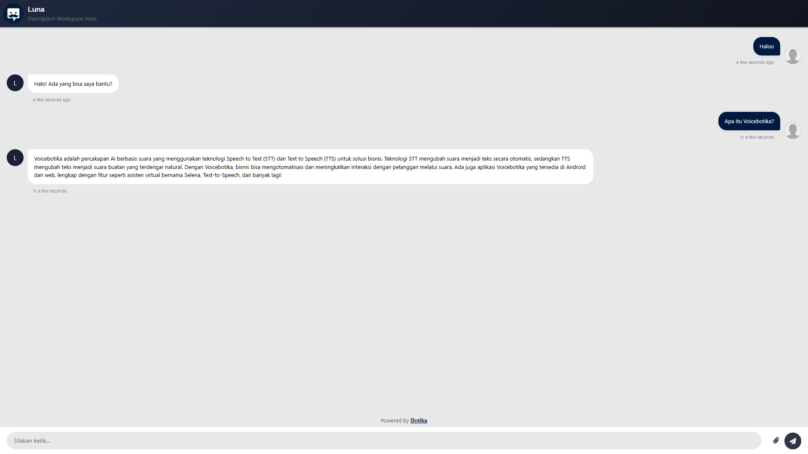 |
0.667 | FAILED | 00:00:16 |
| Apa saja kelebihan Voicebotika? | Apa saja kelebihan Voicebotika? | Voicebotika Apps hadir dengan berbagai keunggulan yang membuat pengelolaan percakapan suara menjadi lebih praktis dan efisien. Berikut beberapa kelebihan utama yang ditawarkan oleh Aplikasi Voicebotika: 1) multi-fungsi (TTS + STT + voicebot) 2) banyak pilihan bahasa dan suara 3) Galeri Suara untuk notifikasi cepat 4) kemampuan membuat suara kustom (Custom Voice) 5) riwayat untuk menyimpan hasil, dan 6) integrasi notifikasi untuk banyak aplikasi (WA, Telegram, Gmail, dsb.). Kelebihan ini mempercepat pembuatan materi audio, mempermudah pencatatan suara, dan membuat notifikasi perangkat lebih personal. | Voicebotika Apps punya banyak keunggulan, nih! Beberapa di antaranya: 1) Multi-fungsi (TTS + STT + voicebot) 2) Banyak pilihan bahasa dan suara 3) Galeri Suara untuk notifikasi cepat 4) Kemampuan membuat suara kustom (Custom Voice) 5) Riwayat untuk menyimpan hasil 6) Integrasi notifikasi untuk banyak aplikasi (WA, Telegram, Gmail, dsb.) Fitur-fitur ini bikin pembuatan materi audio lebih cepat dan notifikasi jadi lebih personal. | Auto: ✓ Jawaban sudah cukup lengkap mencakup poin-poin utama. Bisa ditambahkan detail tentang dengan, berbagai untuk lebih komprehensif. |
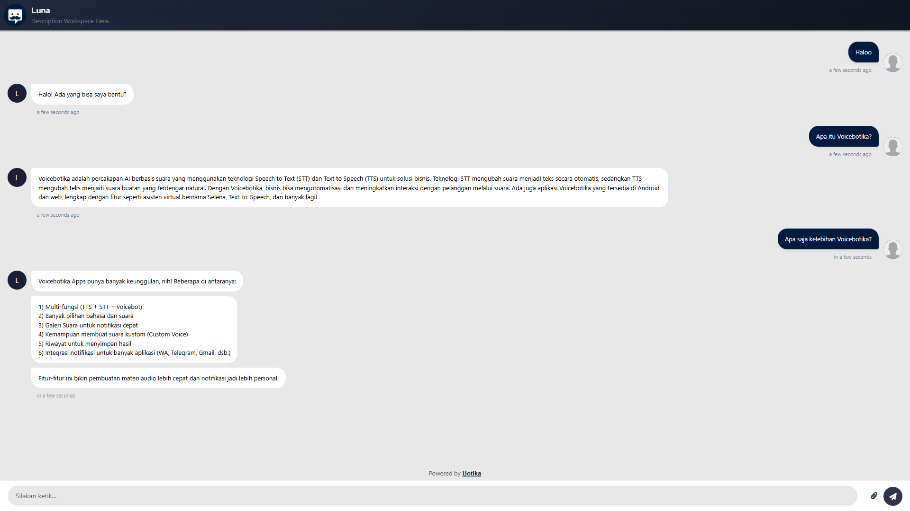 |
0.788 | PASS | 00:00:37 |
| Bagaimana cara mendapatkan aplikasi Voicebotika? | Bagaimana cara mendapatkan aplikasi Voicebotika? | Anda dapat dengan mudah mengunduh dan menggunakan aplikasi voicebotika pada perangkat. Cukup ikuti langkah sederhana berikut: 1) Buka Google Play Store, cari Voicebotika atau gunakan link resmi https://play.google.com/store/apps/details?id=voice.botika.online, lalu tekan Install. 2) Pastikan perangkat mendukung versi Android yang sesuai dan memiliki ruang penyimpanan cukup. 3) Setelah instalasi selesai, buka aplikasi dan lakukan registrasi. Selain melalui aplikasi play store, Anda juga dapat mengakses Voicebotika melalui web https://voice.botika.online/ | Untuk mendapatkan aplikasi Voicebotika, Anda bisa mengunduhnya dengan mudah di perangkat Android. Begini caranya: 1) Buka Google Play Store dan cari "Voicebotika" atau klik link ini: play.google.com/store/apps/details?id=voice.botika.online. 2) Tekan "Install" dan pastikan perangkat Anda mendukung versi Android yang sesuai serta memiliki ruang penyimpanan yang cukup. 3) Setelah terinstal, buka aplikasi dan lakukan registrasi. Selain di Play Store, Anda juga bisa mengakses Voicebotika melalui web di voice.botika.online. | Auto: ✓ Jawaban sudah cukup lengkap mencakup poin-poin utama. Bisa ditambahkan detail tentang menggunakan, pada untuk lebih komprehensif. |
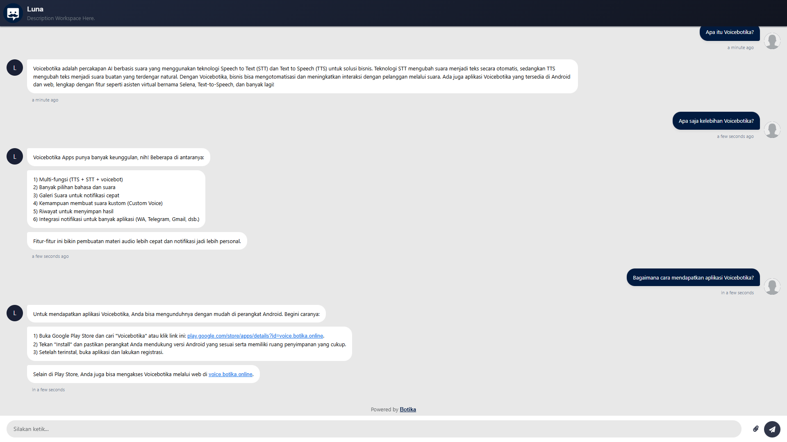 |
0.829 | PASS | 00:00:16 |
| Apa saja fitur utama di Voicebotika? | Apa saja fitur utama di Voicebotika? | Fitur Utama Voicebotika APPS Voicebotika APPS hadir dengan serangkaian fitur yang dirancang untuk memudahkan pengguna dalam mengolah suara dan teks, sekaligus memberikan pengalaman interaksi yang lebih personal melalui asisten virtual. Setiap fitur memiliki fungsi spesifik serta menu pengaturan tersendiri, sehingga pengguna dapat menyesuaikan bahasa, suara, hingga cara pemakaiannya sesuai kebutuhan. Berikut fitur-fitur yang tersedia: 1) Set Notification, membuat dan mengatur suara notifikasi kustom untuk berbagai aplikasi. 2) Voicebot Selena, asisten AI berbasis suara & teks yang bisa diajak percakapan. 3) Text to Speech (TTS), mengubah teks menjadi audio berkualitas alami yang bisa diunduh atau dipakai sebagai nada/notifikasi. 4) Speech to Text (STT), mengonversi rekaman suara menjadi teks yang bisa disalin atau diunduh. 5) Galeri Suara, menyediakan koleksi suara bawaan untuk berbagai kebutuhan. 6) Riwayat, menyimpan history penggunaan TTS dan STT agar mudah diakses kembali. 7) Top-up / Credits, mengelola saldo atau paket penggunaan fitur premium. | Fitur utama di Voicebotika APPS meliputi: 1) Set Notification: Buat dan atur suara notifikasi kustom untuk berbagai aplikasi. 2) Voicebot Selena: Asisten AI berbasis suara dan teks untuk percakapan. 3) Text to Speech (TTS): Ubah teks jadi audio berkualitas alami. 4) Speech to Text (STT): Konversi rekaman suara jadi teks. 5) Galeri Suara: Koleksi suara bawaan untuk berbagai kebutuhan. 6) Riwayat: Simpan history penggunaan TTS dan STT. 7) Top-up / Credits: Kelola saldo untuk fitur premium. | Auto: ⚠ Jawaban sudah benar untuk bagian fitur dan utama, tapi masih kurang lengkap. Perlu ditambahkan informasi tentang dengan, yang, memudahkan. |
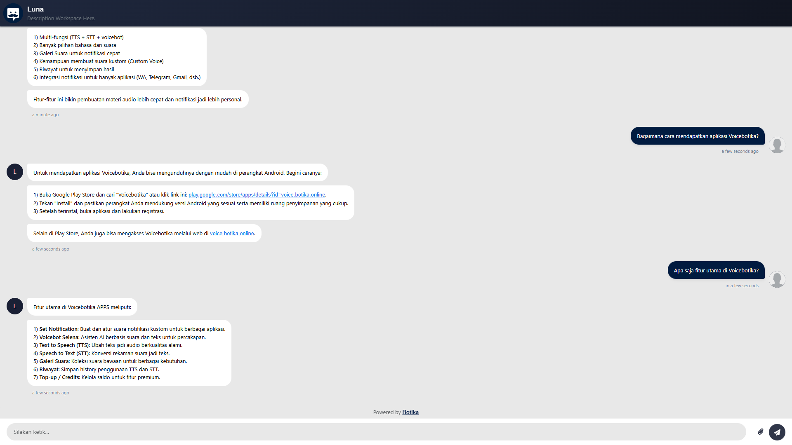 |
0.659 | FAILED | 00:00:37 |
| Bagaimana cara registrasi akun Voicebotika? | Bagaimana cara registrasi akun Voicebotika? | Cara Membuat Akun di Voicebotika APPS Sebelum menggunakan semua fitur, Anda perlu membuat akun terlebih dahulu. Proses pendaftarannya sederhana dan hanya memerlukan beberapa langkah: 1) Buka aplikasi, pilih Daftar di layar utama, lalu isi data diri (nama, email, password). 2) Tekan Daftar dan cek email aktif untuk verifikasi jika diminta. Pastikan email yang digunakan benar-benar aktif karena kode verifikasi maupun reset password akan dikirim ke sana. 3) Setelah verifikasi selesai, akun Anda siap digunakan untuk mengakses semua fitur di Voicebotika APPS. | Untuk registrasi akun Voicebotika, Anda bisa mengikuti langkah-langkah berikut: 1) Akses situs web voice.botika.online atau unduh aplikasi Voicebotika dari Play Store. 2) Pilih opsi "Sign Up" atau "Daftar" pada halaman utama. 3) Masukkan informasi yang diminta seperti nama lengkap, email aktif, dan password. 4) Klik "Daftar" dan cek email Anda untuk verifikasi jika diminta. 5) Setelah verifikasi, akun Anda siap digunakan. Pastikan email yang digunakan aktif untuk menerima notifikasi dan kode verifikasi. | Auto: ⚠ Jawaban hanya mencakup sebagian kecil informasi (akun dan voicebotika). Banyak informasi penting yang belum disebutkan seperti cara, membuat, apps. |
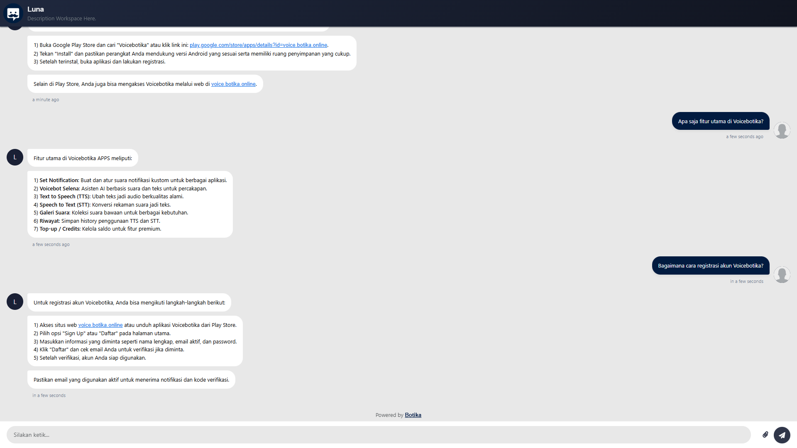 |
0.549 | FAILED | 00:00:17 |
| Apa saja data yang dibutuhkan saat registrasi? | Apa saja data yang dibutuhkan saat registrasi? | Data atau informasi yang dibutuhkan untuk membuat akun (registrasi) pada Aplikasi Voicebotika : - nama lengkap - email aktif - password catatan : Pastikan email yang dipakai untuk verifikasi adalah email aktif yang akan digunakan untuk notifikasi transaksi/top-up dan reset password. Selain itu, buat password yang kuat dan jangan bagikan kredensial ke pihak lain. | Saat registrasi di Aplikasi Voicebotika, Anda perlu menyiapkan data berikut: - Nama lengkap - Email aktif (untuk verifikasi dan notifikasi) - Password (buat yang kuat dan rahasiakan) Pastikan email yang Anda gunakan adalah email yang benar-benar aktif ya, supaya Anda bisa menerima notifikasi transaksi/top-up dan untuk reset password juga. | Auto: ✓ Jawaban sudah cukup lengkap mencakup poin-poin utama. Bisa ditambahkan detail tentang atau, informasi untuk lebih komprehensif. |
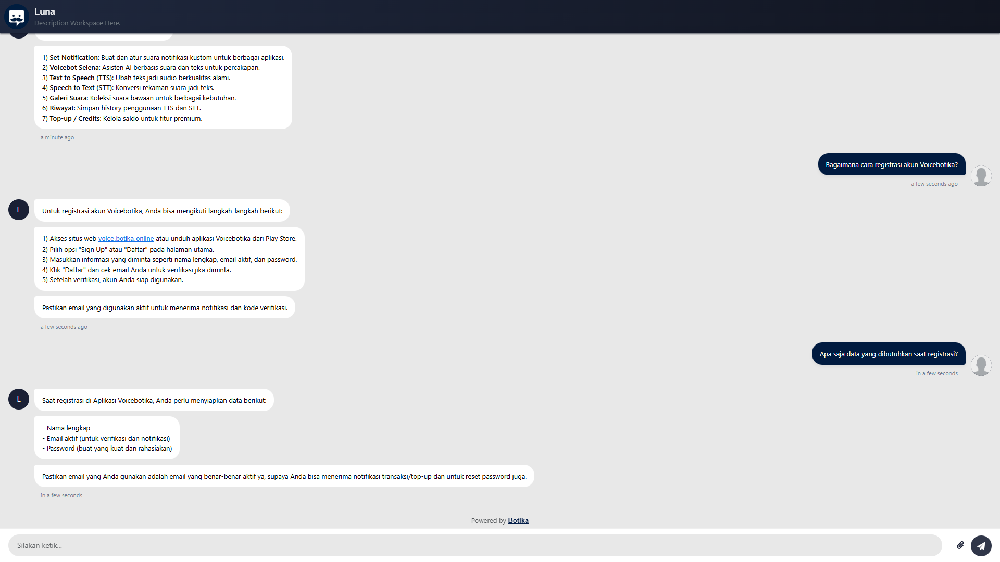 |
0.756 | PASS | 00:00:15 |
| Bagaimana cara login ke akun Voicebotika? | Bagaimana cara login ke akun Voicebotika? | Cara Login ke Voicebotika APPS Untuk dapat menggunakan semua fitur di Voicebotika APPS, Anda perlu melakukan login terlebih dahulu. Prosesnya mudah dan cepat, cukup ikuti langkah berikut: 1) Buka aplikasi, pilih Login, lalu masukkan email dan password. 2) Tekan Masuk, dan setelah berhasil login Anda akan diarahkan ke dashboard utama. 3) Jika Anda sudah memiliki akun Botika sebelumnya, Anda bisa langsung login dengan kredensial akun tersebut karena sistem sudah mendukung Single Sign-On (SSO). | Untuk login ke akun Voicebotika, Anda bisa ikuti langkah-langkah ini: ### Melalui Aplikasi Voicebotika: 1. Buka aplikasi Voicebotika di perangkat Anda. 2. Pilih "Sign in" dan masukkan email serta kata sandi Anda. 3. Klik tombol "Masuk" untuk login. ### Melalui Website Voicebotika: 1. Buka halaman web voice.botika.online. 2. Klik "Sign in" dan masukkan email serta kata sandi Anda. 3. Klik "Sign in" untuk masuk. Setelah login berhasil, Anda bisa langsung menjelajahi fitur-fitur yang ada. | Auto: ⚠ Jawaban hanya mencakup sebagian kecil informasi (login dan voicebotika). Banyak informasi penting yang belum disebutkan seperti cara, apps, dapat. |
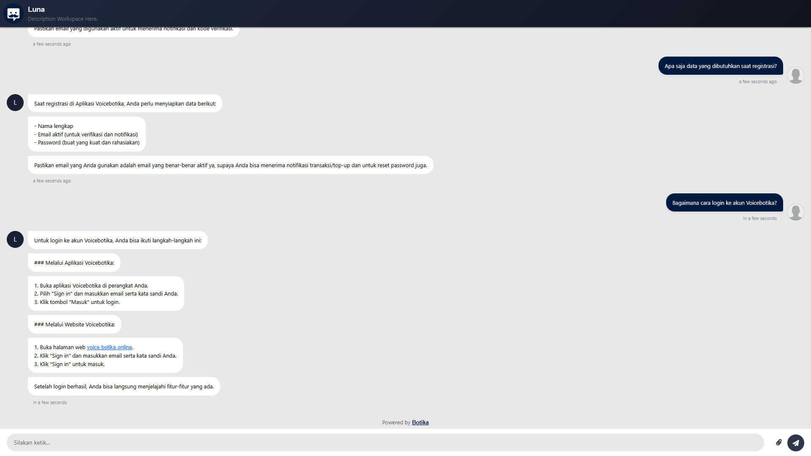 |
0.508 | FAILED | 00:00:37 |
| Bagaimana cara reset password akun Voicebotika? | Bagaimana cara reset password akun Voicebotika? | Cara Reset Password di Voicebotika APPS Jika Anda lupa password dan tidak bisa login, jangan khawatir. Voicebotika APPS menyediakan fitur reset password yang cepat dan mudah. Ikuti langkah-langkah berikut untuk mengatur ulang password Anda: 1) Di layar login, pilih Lupa password?, lalu masukkan email terdaftar dan tekan Kirim. 2) Cek email Anda untuk mendapatkan kode verifikasi, masukkan kode tersebut di aplikasi, lalu buat password baru. 3) Tekan Kirim, dan setelah muncul konfirmasi “Berhasil”, Anda bisa login kembali menggunakan password baru. | Untuk reset password akun Voicebotika, ikuti langkah-langkah berikut: 1. Di layar login, pilih "Lupa password?", lalu masukkan email terdaftar Anda dan tekan "Kirim." 2. Cek email Anda untuk mendapatkan kode verifikasi, masukkan kode tersebut di aplikasi, lalu buat password baru. 3. Tekan "Kirim", dan setelah muncul konfirmasi "Berhasil", Anda bisa login kembali menggunakan password baru. Semoga berhasil! | Auto: ✓ Jawaban sudah cukup lengkap mencakup poin-poin utama. Bisa ditambahkan detail tentang cara, apps untuk lebih komprehensif. |
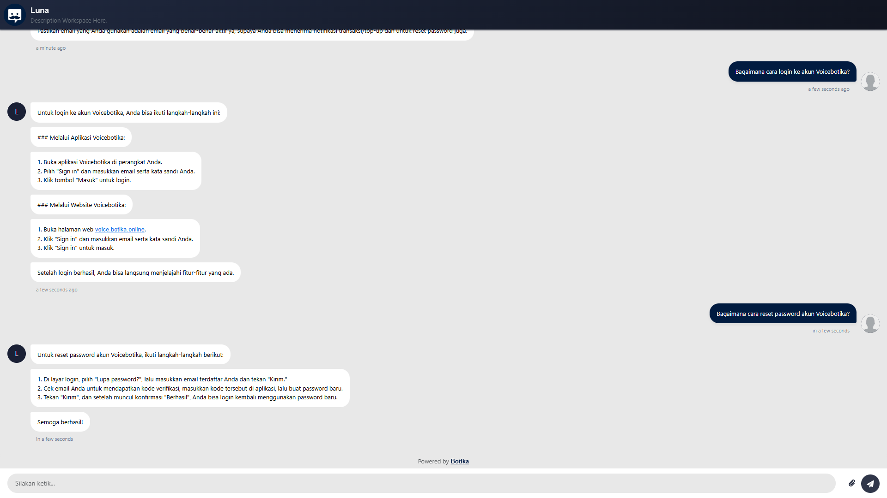 |
0.814 | PASS | 00:00:37 |
| Apa itu fitur Set Notification Voicebotika? | Apa itu fitur Set Notification Voicebotika? | Fitur Set Notification adalah pengaturan yang memungkinkan Anda mengganti nada notifikasi aplikasi di perangkat menggunakan audio yang dihasilkan dari berbagai sumber. Dengan fitur ini, Anda dapat memilih suara dari TTS (mengubah teks menjadi suara), Upload Audio (mengunggah file mp3, wav, atau m4a), atau Galeri Suara (koleksi bawaan aplikasi). Fitur ini dapat diterapkan pada berbagai aplikasi seperti WhatsApp, Telegram, Shopee, Instagram, Gmail, YouTube, Twitter/X, LinkedIn, dan Google Calendar. Agar berfungsi dengan baik, pastikan Anda telah memberikan izin notifikasi serta akses penyimpanan dan rekaman pada perangkat. | Fitur Set Notification di Voicebotika APPS memungkinkan Anda membuat dan mengatur suara notifikasi kustom untuk berbagai aplikasi. Jadi, notifikasi Anda bisa lebih personal dan sesuai dengan keinginan Anda! | Auto: ✗ Jawaban tidak cukup relevan dengan yang diharapkan. Sebagian besar informasi penting seperti adalah, pengaturan, yang tidak disebutkan. |
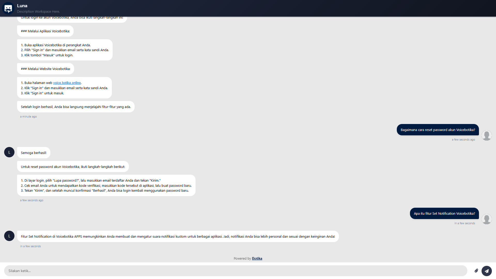 |
0.351 | FAILED | 00:00:13 |
| Bagaimana cara atur notifikasi WhatsApp di Voicebotika? | Bagaimana cara atur notifikasi WhatsApp di Voicebotika? | Cara Mengatur Notifikasi WhatsApp di Voicebotika APPS Voicebotika APPS memungkinkan Anda membuat nada notifikasi WhatsApp yang unik dengan suara kustom. Anda bisa menggunakan teks yang diubah menjadi suara, mengunggah file audio, atau memilih dari galeri suara bawaan. Berikut langkah-langkahnya: 1) Buka Set Notif dan aktifkan Notifikasi WhatsApp dan beri izin jika diminta. 2) Pilih Tipe Suara: - TTS: pilih bahasa, suara, lalu masukkan teks. - Audio (Upload): unggah file mp3/wav/m4a sesuai ukuran. - Galeri Suara: pilih dari koleksi bawaan. 3) Tekan Simpan. Notifikasi WhatsApp akan berbunyi sesuai pengaturan Anda. Catatan: Pastikan izin notifikasi dan akses penyimpanan sudah diaktifkan. Jika menggunakan upload, pastikan file sesuai format dan ukuran yang didukung. | Berikut cara mengatur notifikasi WhatsApp di Voicebotika APPS: 1. Buka Set Notif dan aktifkan Notifikasi WhatsApp, beri izin jika diminta. 2. Pilih Tipe Suara: - TTS: Pilih bahasa, suara, lalu masukkan teks. - Audio (Upload): Unggah file mp3/wav/m4a sesuai ukuran. - Galeri Suara: Pilih dari koleksi bawaan. 3. Tekan Simpan. Notifikasi WhatsApp Anda akan berbunyi sesuai pengaturan tersebut. Pastikan izin notifikasi dan akses penyimpanan sudah diaktifkan ya! | Auto: ✓ Jawaban sudah cukup lengkap mencakup poin-poin utama. Bisa ditambahkan detail tentang memungkinkan, membuat untuk lebih komprehensif. |
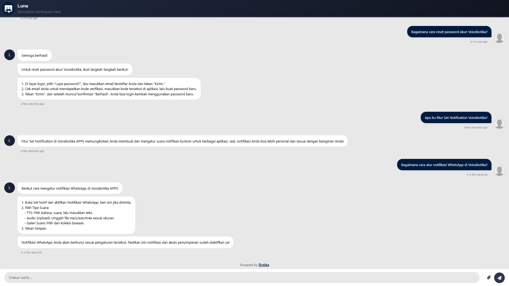 |
0.875 | PASS | 00:00:37 |
| Bagaimana cara atur pengingat Google Calendar dengan Voicebotika? | Bagaimana cara atur pengingat Google Calendar dengan Voicebotika? | Cara Mengatur Pengingat Google Calendar di Voicebotika APPS Dengan Voicebotika APPS, Anda bisa membuat pengingat acara di Google Calendar jadi lebih personal menggunakan suara kustom. Notifikasi bisa dibuat dari teks yang diubah menjadi suara, unggahan audio, atau suara bawaan dari galeri. Berikut langkah-langkahnya: 1) Buka Set Notif dan aktifkan Atur Pengingat (Google Calendar) dan beri izin akses kalender & notifikasi. 2) Pilih bahasa & suara (TTS/Galeri/Upload), lalu tentukan durasi pengingat sebelum acara, misalnya 15 menit. 3) Tekan Simpan. Voicebotika akan memutar notifikasi kustom sebelum acara sesuai pengaturan Anda. Catatan: Pastikan izin sinkronisasi kalender dan notifikasi sudah diaktifkan agar pengingat bisa berfungsi dengan baik. | Untuk mengatur pengingat Google Calendar dengan Voicebotika APPS, ikuti langkah-langkah ini: 1. Buka Set Notif dan aktifkan Atur Pengingat (Google Calendar) serta beri izin akses kalender & notifikasi. 2. Pilih bahasa & suara (TTS/Galeri/Upload), dan tentukan durasi pengingat sebelum acara, misalnya 15 menit. 3. Tekan Simpan. Voicebotika akan memutar notifikasi kustom sebelum acara sesuai pengaturan Anda. Jangan lupa pastikan izin sinkronisasi kalender dan notifikasi sudah diaktifkan ya! | Auto: ✓ Jawaban sudah cukup lengkap mencakup poin-poin utama. Bisa ditambahkan detail tentang bisa, membuat untuk lebih komprehensif. |
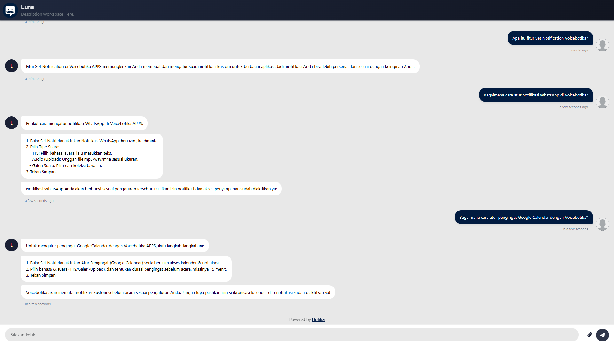 |
0.763 | PASS | 00:00:37 |
| Aplikasi apa saja yang bisa diatur notifikasinya selain WhatsApp dan Google Calendar? | Aplikasi apa saja yang bisa diatur notifikasinya selain WhatsApp dan Google Calendar? | Selain WhatsApp & Google Calendar, Voicebotika mendukung kustom notifikasi untuk Telegram, Shopee, Instagram, YouTube, Twitter/X, Gmail, dan LinkedIn. 1) Buka Set Notif, pilih aplikasi (Telegram, Shopee, Instagram, YouTube, Twitter/X, Gmail, LinkedIn) dan beri izin. 2) Pilih sumber suara untuk notifikasi (TTS/Galeri/Upload). 3) Tekan Simpan. Pastikan notifikasi aktif di pengaturan Android agar berfungsi. Beberapa aplikasi perlu izin notifikasi aktif di pengaturan Android agar perubahan berlaku. | Selain WhatsApp & Google Calendar, Voicebotika mendukung kustom notifikasi untuk aplikasi seperti Telegram, Shopee, Instagram, YouTube, Twitter/X, Gmail, dan LinkedIn. Anda bisa pilih aplikasi yang diinginkan di Set Notif, beri izin, pilih sumber suara, lalu tekan Simpan. Pastikan notifikasi aktif di pengaturan Android ya! | Auto: ✓ Jawaban sudah cukup lengkap mencakup poin-poin utama. Bisa ditambahkan detail tentang buka, galeri untuk lebih komprehensif. |
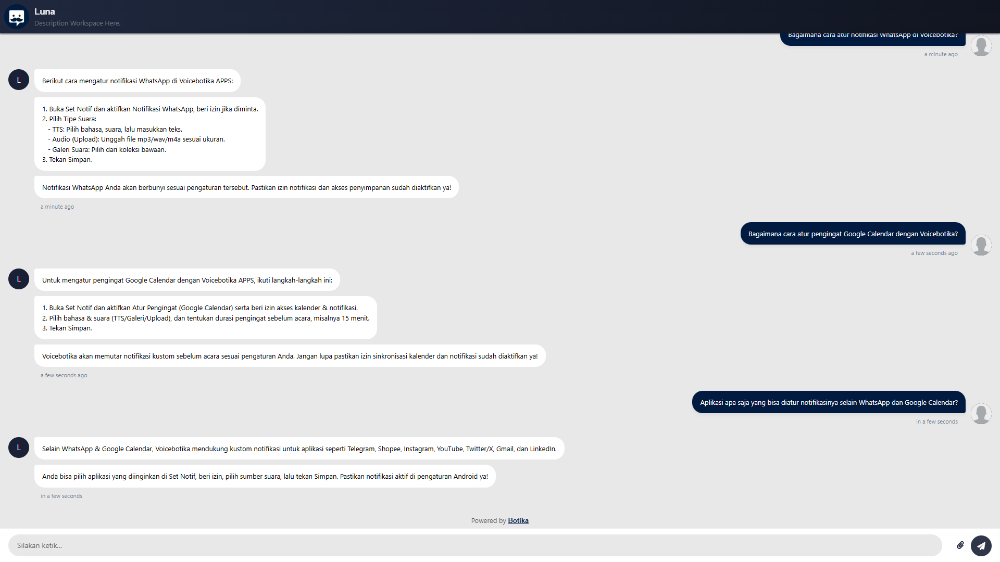 |
0.821 | PASS | 00:00:14 |
| Apa itu Galeri Suara di Voicebotika? | Apa itu Galeri Suara di Voicebotika? | Galeri Suara pada Voicebotika adalah kumpulan audio bawaan (gratis) yang bisa diputar dan dipilih sebagai notifikasi tanpa perlu upload. Anda dapat mencari, memutar preview, lalu menerapkan suara ke aplikasi target. Galeri memudahkan memilih nada standar dengan cepat. | Galeri Suara di Voicebotika adalah kumpulan audio bawaan (gratis) yang bisa dipilih sebagai notifikasi. Anda bisa mencari, memutar preview, dan menerapkannya ke aplikasi target tanpa perlu upload. Praktis, kan? | Auto: ✓ Jawaban sudah cukup lengkap mencakup poin-poin utama. Bisa ditambahkan detail tentang pada, dapat untuk lebih komprehensif. |
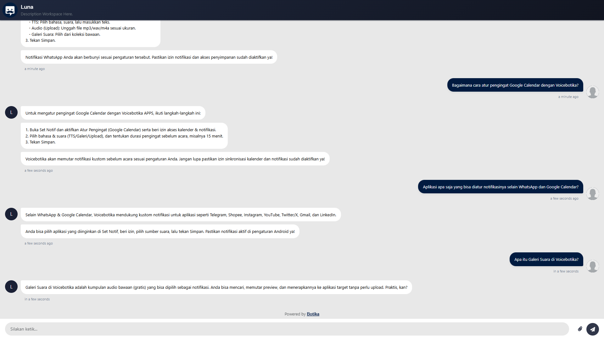 |
0.8 | PASS | 00:00:11 |
| Apa itu Voicebot Selena? | Apa itu Voicebot Selena? | Selena adalah chatbot/voicebot berbasis AI dalam Voicebotika yang dapat menjawab pertanyaan sehari-hari secara teks & audio. Selena memproses input suara atau teks di server (harus online), lalu mengembalikan respons yang dapat didengar atau dibaca. Selena cocok untuk tanya jawab sederhana, informasi produk, dan hiburan ringan. | Voicebot Selena adalah chatbot/voicebot berbasis AI di Voicebotika yang bisa menjawab pertanyaan sehari-hari lewat teks & audio. Selena memproses input suara atau teks online, lalu memberikan respons yang bisa didengar atau dibaca. Cocok buat tanya jawab simpel, info produk, dan hiburan ringan. | Auto: ✓ Jawaban sudah cukup lengkap mencakup poin-poin utama. Bisa ditambahkan detail tentang dalam, dapat untuk lebih komprehensif. |
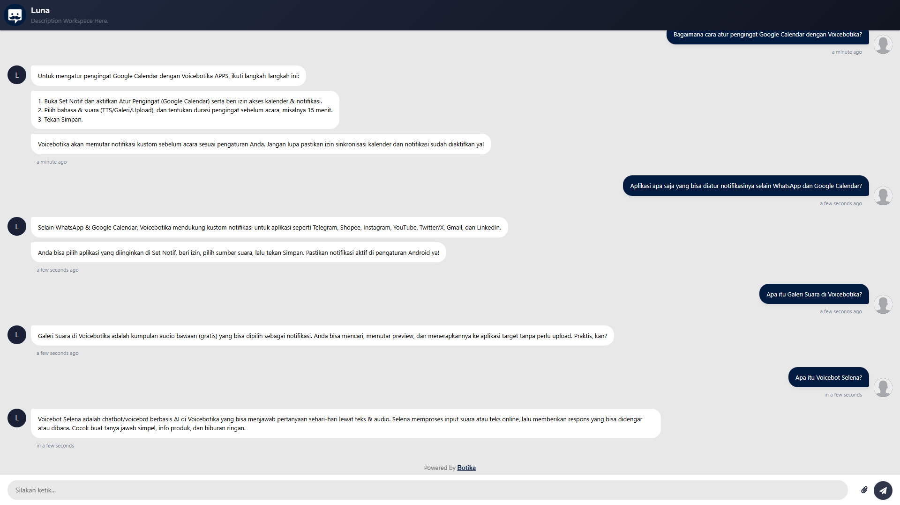 |
0.791 | PASS | 00:00:12 |
| Bagaimana cara menggunakan Voicebot Selena? | Bagaimana cara menggunakan Voicebot Selena? | Cara Menggunakan Voicebot Selena di Voicebotika APPS Selena adalah asisten virtual berbasis AI yang bisa diajak berinteraksi melalui suara maupun teks. Anda bisa mengajukan pertanyaan, meminta informasi, atau sekadar berbincang, dan Selena akan merespons dalam bentuk teks maupun audio. Berikut langkah-langkah menggunakannya: 1) Buka Voicebot, tekan Mulai, lalu ucapkan pertanyaan Anda. 2) Tunggu jawaban Selena muncul dalam bentuk teks/audio. Jika ingin memberikan instruksi baru, tekan Interupsi. 3) Tekan Tutup untuk mengakhiri sesi. Tips: Gunakan pengucapan yang jelas dan pastikan koneksi internet stabil agar hasil lebih akurat. | Cara menggunakan Voicebot Selena di Voicebotika Apps cukup mudah: 1) Buka Voicebot, tekan "Mulai," dan ucapkan pertanyaan Anda. 2) Tunggu jawaban Selena muncul dalam bentuk teks/audio. Kalau mau kasih instruksi baru, tekan "Interupsi." 3) Tekan "Tutup" untuk mengakhiri sesi. Jangan lupa, gunakan pengucapan yang jelas dan pastikan koneksi internet Anda stabil biar hasilnya lebih akurat. | Auto: ⚠ Jawaban sudah benar untuk bagian cara dan menggunakan, tapi masih kurang lengkap. Perlu ditambahkan informasi tentang adalah, asisten, virtual. |
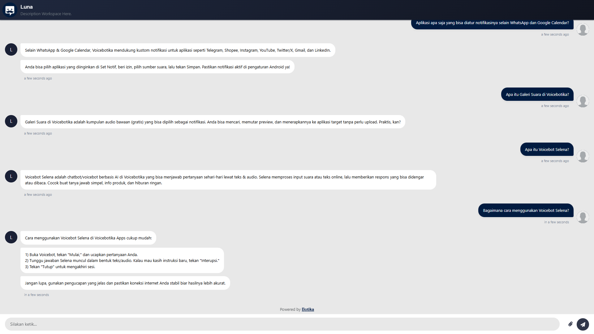 |
0.691 | FAILED | 00:00:14 |
| Apa itu fitur Text to Speech (TTS) di Voicebotika? | Apa itu fitur Text to Speech (TTS) di Voicebotika? | TTS mengubah teks menjadi audio berkualitas manusiawi. Anda bisa memilih bahasa & karakter suara, memasukkan teks, lalu generate audio yang bisa diputar, diunduh, dibagikan, atau dijadikan notifikasi. TTS berguna untuk pembuatan pengumuman, materi e-learning, nada dering, dan voice prompts. Biaya: informasi tarif TTS tercantum di aplikasi (di userguide: Rp1 per karakter). | Fitur Text to Speech (TTS) di Voicebotika mengubah teks menjadi audio berkualitas manusiawi. Anda bisa pilih bahasa dan karakter suara, masukkan teks, lalu generate audio yang bisa diputar, diunduh, dibagikan, atau dijadikan notifikasi. TTS ini berguna banget buat bikin pengumuman, materi e-learning, nada dering, dan voice prompts. | Auto: ✓ Jawaban sudah cukup lengkap mencakup poin-poin utama. Bisa ditambahkan detail tentang untuk, biaya untuk lebih komprehensif. |
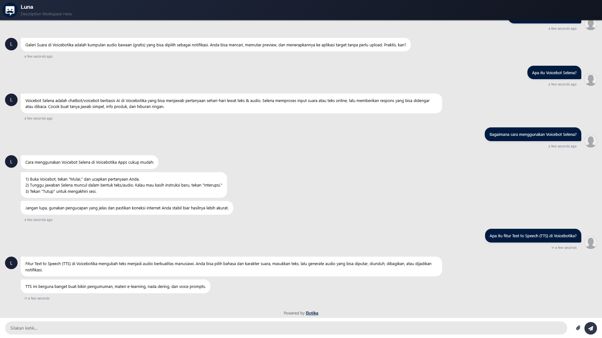 |
0.881 | PASS | 00:00:15 |
| Bagaimana cara menggunakan Text to Speech? | Bagaimana cara menggunakan Text to Speech? | Cara Menggunakan Fitur Text-to-Speech (TTS) di Voicebotika APPS Fitur TTS memungkinkan Anda mengubah teks menjadi suara dengan kualitas alami. Hasil audio bisa digunakan untuk berbagai kebutuhan, seperti nada notifikasi, ringtone, atau sekadar disimpan sebagai koleksi suara. Berikut langkah-langkahnya: 1) Buka menu TTS, pilih bahasa dan suara, lalu ketik atau tempel teks di kolom input (sesuai batas karakter). 2) Klik Generate; jika fitur berbayar, lakukan transaksi atau top-up kredit terlebih dahulu. 3) Setelah berhasil, hasil suara bisa diputar, disimpan di Riwayat TTS, diunduh, dibagikan, dijadikan notifikasi, atau gunakan Custom Voice jika tersedia. | Mudah kok! Berikut cara menggunakan fitur Text-to-Speech (TTS) di Voicebotika Apps: 1) Buka menu TTS, pilih bahasa dan suara, lalu ketik atau tempel teks di kolom input (sesuai batas karakter). 2) Klik Generate; jika fitur berbayar, lakukan transaksi atau top-up kredit terlebih dahulu. 3) Setelah berhasil, hasil suara bisa diputar, disimpan di Riwayat TTS, diunduh, dibagikan, dijadikan notifikasi, atau gunakan Custom Voice jika tersedia. | Auto: ✓ Jawaban sudah cukup lengkap mencakup poin-poin utama. Bisa ditambahkan detail tentang memungkinkan, anda untuk lebih komprehensif. |
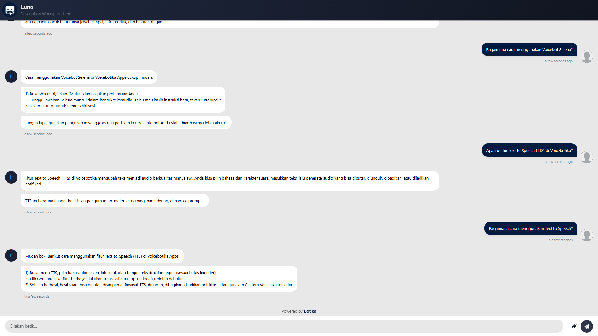 |
0.802 | PASS | 00:00:37 |
| Bagaimana cara memilih bahasa di Text to Speech? | Bagaimana cara memilih bahasa di Text to Speech? | Cara Menggunakan Fitur Text-to-Speech (TTS) di Voicebotika APPS Fitur TTS memungkinkan Anda mengubah teks menjadi suara dengan kualitas alami. Hasil audio bisa digunakan untuk berbagai kebutuhan, seperti nada notifikasi, ringtone, atau sekadar disimpan sebagai koleksi suara. Berikut langkah-langkahnya: 1) Buka menu TTS, pilih bahasa dan suara, lalu ketik atau tempel teks di kolom input (sesuai batas karakter). 2) Klik Generate; jika fitur berbayar, lakukan transaksi atau top-up kredit terlebih dahulu. 3) Setelah berhasil, hasil suara bisa diputar, disimpan di Riwayat TTS, diunduh, dibagikan, dijadikan notifikasi, atau gunakan Custom Voice jika tersedia. | Untuk memilih bahasa di Text to Speech (TTS) di Voicebotika Apps: 1) Buka menu TTS, pilih bahasa dan suara, lalu ketik atau tempel teks di kolom input sesuai batas karakter. 2) Klik Generate; jika fitur berbayar, lakukan transaksi atau top-up kredit terlebih dahulu. 3) Setelah berhasil, hasil suara bisa diputar, disimpan di Riwayat TTS, diunduh, dibagikan, dijadikan notifikasi, atau gunakan Custom Voice jika tersedia. | Auto: ✓ Jawaban sudah cukup lengkap mencakup poin-poin utama. Bisa ditambahkan detail tentang cara, memungkinkan untuk lebih komprehensif. |
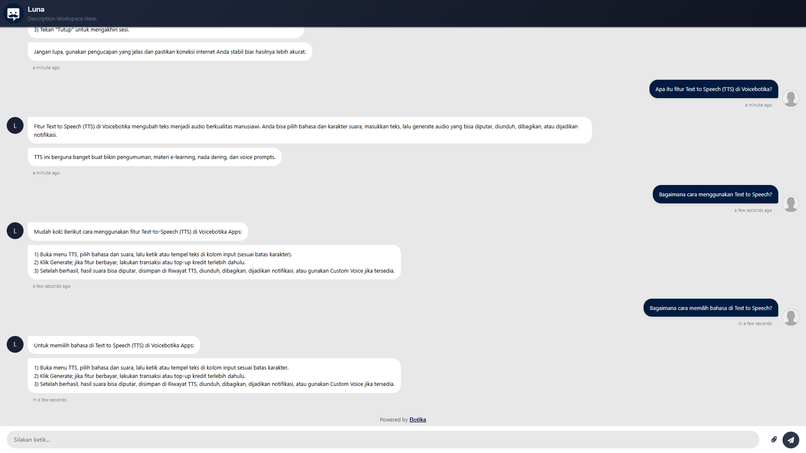 |
0.79 | PASS | 00:00:37 |
| Bagaimana cara memilih suara di Text to Speech? | Bagaimana cara memilih suara di Text to Speech? | Cara Memilih dan Menggunakan Suara di Fitur TTS Di Voicebotika APPS, Anda bisa memilih karakter suara yang berbeda sesuai kebutuhan, mulai dari suara laki-laki, perempuan, hingga suara khusus. Selain itu, Anda juga bisa menambahkan Custom Voice agar hasil lebih personal. Berikut langkah-langkahnya: 1) Setelah memilih bahasa, tekan Pilih Suara dan pilih karakter suara (laki-laki, perempuan, atau custom). 2) Masukkan teks lalu tekan Generate untuk membuat suara. 3) Jika Anda menambahkan Custom Voice, suara tersebut akan muncul di daftar setelah disimpan. | Untuk memilih suara di fitur TTS Voicebotika Apps, ikuti langkah berikut: 1) Setelah memilih bahasa, tekan Pilih Suara dan pilih karakter suara (laki-laki, perempuan, atau custom). 2) Masukkan teks lalu tekan Generate untuk membuat suara. 3) Jika Anda menambahkan Custom Voice, suara tersebut akan muncul di daftar setelah disimpan. | Auto: ✓ Jawaban sudah cukup lengkap mencakup poin-poin utama. Bisa ditambahkan detail tentang cara, bisa untuk lebih komprehensif. |
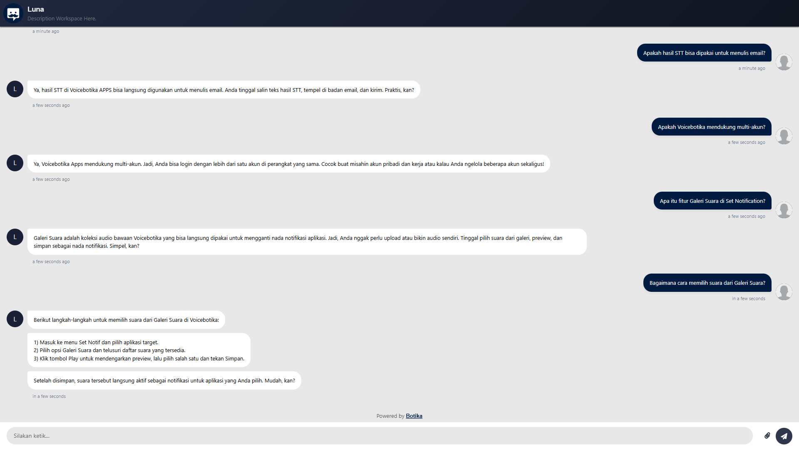 |
0.767 | PASS | 00:00:37 |
| Bagaimana cara menambahkan suara karakter baru di TTS? | Bagaimana cara menambahkan suara karakter baru di TTS? | Cara Menambahkan Custom Voice di Voicebotika APPS Fitur Custom Voice memungkinkan Anda membuat model suara unik sesuai rekaman pribadi. Suara ini bisa digunakan untuk menghasilkan audio TTS yang lebih personal. Berikut cara membuatnya: 1) Buka menu TTS, pilih bahasa, lalu pilih opsi suara, akan ada pilihan untuk menambahkan suara karakter baru, tekan Tambah Suara Baru / Custom Voice dan ikuti instruksi rekaman (pastikan suara jelas dan lingkungan tenang). 2) Setelah selesai, beri nama pada Custom Voice lalu simpan. 3) Jika berhasil, akan muncul notifikasi “Success”, dan suara kustom bisa langsung digunakan untuk generate. Catatan: Rekaman harus memenuhi kualitas minimum agar voice model dapat bekerja dengan baik. | 1) Buka menu TTS, pilih bahasa, lalu pilih opsi suara, akan ada pilihan untuk menambahkan suara karakter baru, tekan Tambah Suara Baru / Custom Voice dan ikuti instruksi rekaman (pastikan suara jelas dan lingkungan tenang). 2) Setelah selesai, beri nama pada Custom Voice lalu simpan. 3) Jika berhasil, akan muncul notifikasi “Success”, dan suara kustom bisa langsung digunakan untuk generate. | Auto: ✓ Jawaban sudah cukup lengkap mencakup poin-poin utama. Bisa ditambahkan detail tentang cara, apps untuk lebih komprehensif. |
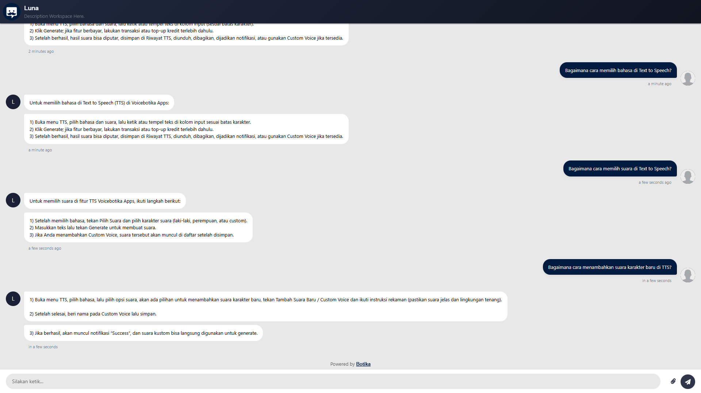 |
0.713 | PASS | 00:00:37 |
| Bagaimana cara menggunakan Custom Voice di TTS? | Bagaimana cara menggunakan Custom Voice di TTS? | Cara Menggunakan Custom Voice di Fitur TTS Setelah berhasil membuat Custom Voice, Anda bisa langsung memakainya untuk menghasilkan audio dari teks. Fitur ini cocok digunakan untuk berbagai kebutuhan, misalnya pengumuman sekolah, konten kreatif, atau notifikasi unik. Berikut langkah-langkahnya: 1) Buka menu TTS, pilih bahasa, lalu pilih Custom Voice yang sudah dibuat. 2) Masukkan teks dan klik Generate. 3) Putar atau unduh audio hasilnya, lalu gunakan sesuai kebutuhan (contoh: pengumuman sekolah). | 1) Buka menu TTS, pilih bahasa, lalu pilih Custom Voice yang sudah dibuat. 2) Masukkan teks dan klik Generate. 3) Putar atau unduh audio hasilnya, lalu gunakan sesuai kebutuhan (contoh: pengumuman sekolah). | Auto: ⚠ Jawaban sudah benar untuk bagian menggunakan dan custom, tapi masih kurang lengkap. Perlu ditambahkan informasi tentang cara, fitur, setelah. |
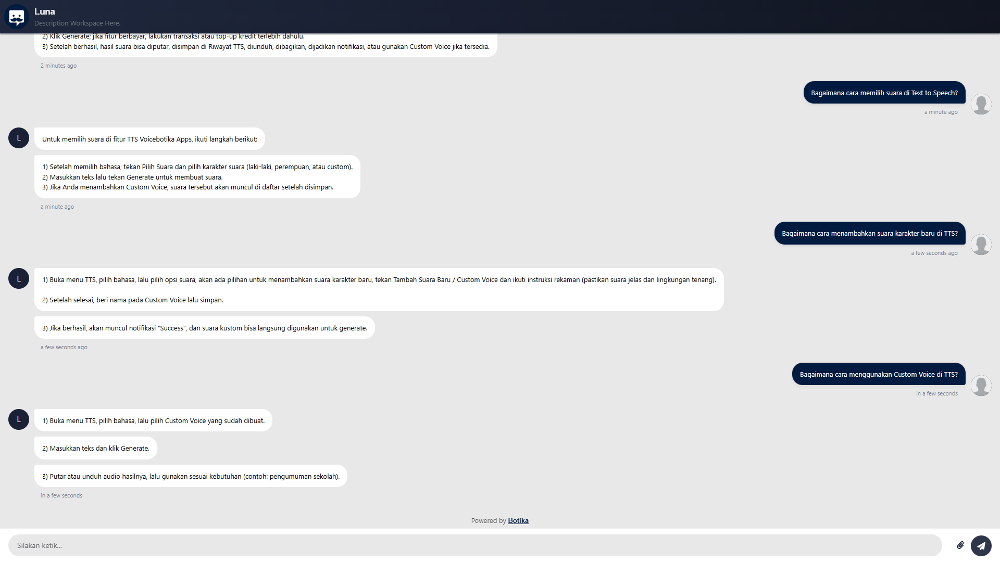 |
0.619 | FAILED | 00:00:37 |
| Apa itu fitur Speech to Text (STT) di Voicebotika? | Apa itu fitur Speech to Text (STT) di Voicebotika? | STT adalah fitur untuk mengubah suara menjadi teks. Cocok untuk mencatat percakapan, membuat catatan cepat, atau mendikte tulisan tanpa harus mengetik. Contoh: user berbicara “Hari ini saya rapat pukul 10” lalu sistem menuliskannya otomatis. | STT di Voicebotika adalah fitur yang mengubah suara menjadi teks secara otomatis. Cocok banget buat mencatat percakapan, bikin catatan cepat, atau mendikte tulisan tanpa harus ngetik manual. Misalnya, kalau Anda ngomong, “Hari ini saya rapat pukul 10,” sistemnya bakal langsung nulis otomatis. | Auto: ✓ Jawaban sudah cukup lengkap mencakup poin-poin utama. Bisa ditambahkan detail tentang untuk, untuk untuk lebih komprehensif. |
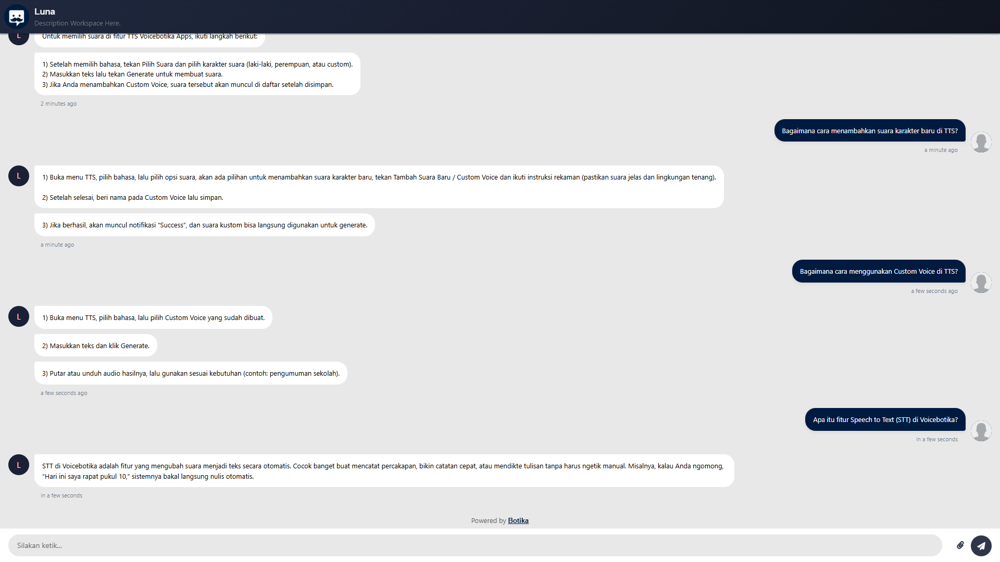 |
0.806 | PASS | 00:00:15 |
| Bagaimana cara menggunakan Speech to Text? | Bagaimana cara menggunakan Speech to Text? | Cara Menggunakan Fitur Speech-to-Text (STT) di Voicebotika APPS Fitur STT memungkinkan Anda mengubah ucapan menjadi teks secara otomatis. Sangat berguna untuk membuat catatan, menulis email, atau mengetik pesan tanpa harus mengetik manual. Berikut cara menggunakannya: 1) Buka menu STT dan pilih bahasa. 2) Klik Rekam, lalu ucapkan kalimat yang ingin diubah menjadi teks. 3) Klik Stop untuk melihat hasil rekaman dalam bentuk teks. Contoh penggunaan: merekam suara untuk menulis email tanpa harus mengetik secara manual. | Berikut cara menggunakan fitur Speech-to-Text (STT) di Voicebotika APPS: 1) Buka menu STT dan pilih bahasa yang Anda inginkan. 2) Klik Rekam, lalu ucapkan kalimat yang ingin diubah menjadi teks. 3) Klik Stop untuk melihat hasil rekaman dalam bentuk teks. Dengan cara ini, Anda bisa merekam suara untuk menulis email atau catatan tanpa harus mengetik manual. | Auto: ✓ Jawaban sudah cukup lengkap mencakup poin-poin utama. Bisa ditambahkan detail tentang memungkinkan, mengubah untuk lebih komprehensif. |
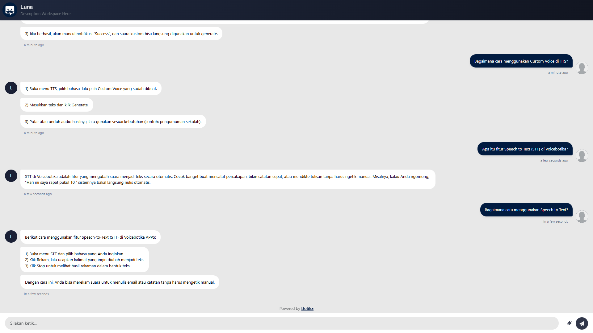 |
0.882 | PASS | 00:00:37 |
| Bahasa apa saja yang didukung di Speech to Text? | Bahasa apa saja yang didukung di Speech to Text? | Voicebotika mendukung bahasa Indonesia, Inggris, dan beberapa bahasa internasional lainnya. Pilihan bahasa akan menentukan akurasi pengenalan suara. Contoh: user pilih bahasa Inggris untuk mendikte tugas kuliah. | Voicebotika mendukung bahasa Indonesia, Inggris, dan beberapa bahasa internasional lainnya. Pilihan bahasa ini bakal menentukan akurasi pengenalan suaranya. Misalnya, kalau Anda pilih bahasa Inggris buat mendikte tugas kuliah. | Auto: ✓ Jawaban sudah cukup lengkap mencakup poin-poin utama. Bisa ditambahkan detail tentang akan, contoh untuk lebih komprehensif. |
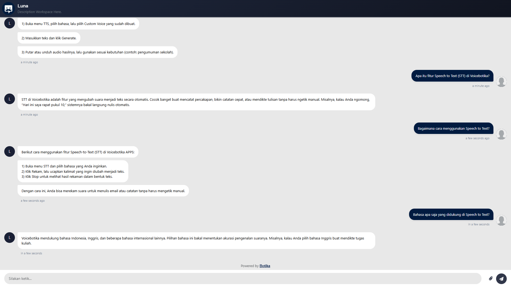 |
0.84 | PASS | 00:00:13 |
| Bagaimana cara menyimpan hasil STT? | Bagaimana cara menyimpan hasil STT? | Setelah rekaman selesai, teks bisa langsung disalin, disimpan di aplikasi, atau dibagikan ke aplikasi lain seperti WhatsApp atau Gmail. Contoh: user menyimpan catatan hasil STT ke aplikasi Notes. | Setelah rekaman selesai, teks bisa langsung disalin, disimpan di aplikasi, atau dibagikan ke aplikasi lain seperti WhatsApp atau Gmail. Misalnya, Anda bisa menyimpan catatan hasil STT ke aplikasi Notes. | Auto: ✓ Jawaban sudah sangat baik dan lengkap. Semua informasi penting yang diharapkan sudah tercakup dengan akurat. |
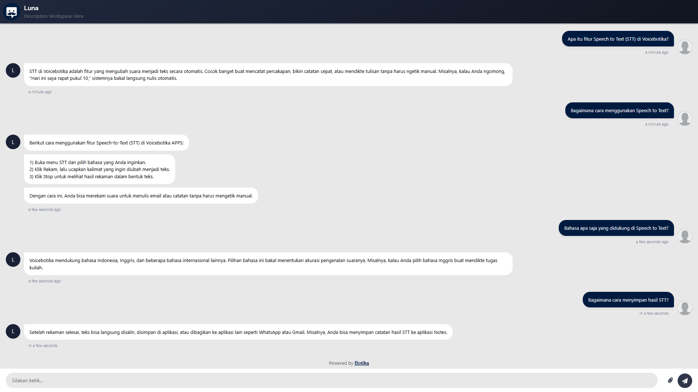 |
0.917 | PASS | 00:00:11 |
| Apakah hasil STT bisa diedit? | Apakah hasil STT bisa diedit? | Tidak bisa. Setelah teks STT muncul, Anda dapat menyalin, menyimpan, atau langsung membagikannya ke aplikasi lain. Namun, hasil yang sudah di-generate tidak bisa diedit langsung di aplikasi. Jika ada kesalahan dalam input atau pengucapan, Anda perlu melakukan rekaman ulang dan generate kembali agar hasilnya sesuai. | Tidak bisa. Setelah teks STT muncul, Anda dapat menyalin, menyimpan, atau langsung membagikannya ke aplikasi lain. Namun, hasil yang sudah di-generate tidak bisa diedit langsung di aplikasi. Kalau ada kesalahan, Anda perlu rekam ulang dan generate kembali. | Auto: ✓ Jawaban sudah cukup lengkap mencakup poin-poin utama. Bisa ditambahkan detail tentang jika, dalam untuk lebih komprehensif. |
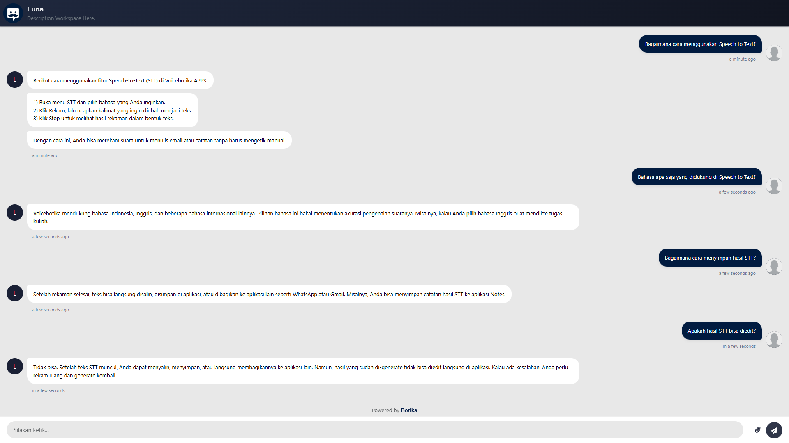 |
0.825 | PASS | 00:00:12 |
| Apa keuntungan menggunakan STT dibanding mengetik manual? | Apa keuntungan menggunakan STT dibanding mengetik manual? | STT lebih cepat dan efisien, terutama untuk teks panjang. Fitur ini juga membantu pengguna dengan keterbatasan mengetik. Contoh: user membuat draft artikel panjang hanya dengan berbicara. | STT lebih cepat dan efisien, terutama untuk teks panjang. Ini juga membantu pengguna dengan keterbatasan mengetik. Contohnya, Anda bisa membuat draft artikel panjang hanya dengan berbicara. | Auto: ✓ Jawaban sudah sangat baik dan lengkap. Semua informasi penting yang diharapkan sudah tercakup dengan akurat. |
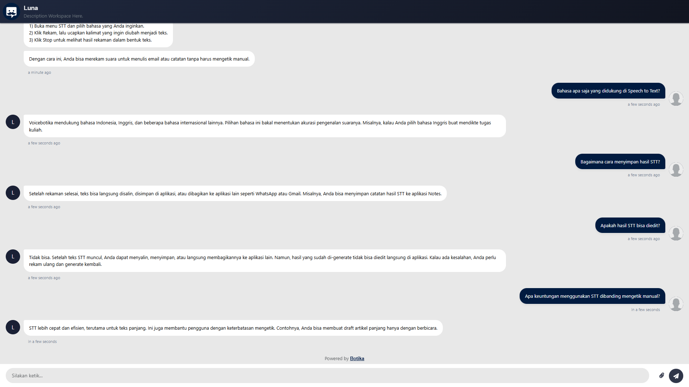 |
0.913 | PASS | 00:00:11 |
| Apa itu menu History di Voicebotika? | Apa itu menu History di Voicebotika? | Menu History menyimpan riwayat penggunaan TTS dan STT, termasuk teks yang dimasukkan dan audio yang dihasilkan. Dengan History, pengguna bisa mengulang atau mengunduh kembali hasil sebelumnya. Contoh: user mencari ulang audio pengumuman yang dibuat minggu lalu. | Menu History di Voicebotika menyimpan riwayat penggunaan TTS dan STT, termasuk teks yang dimasukkan dan audio yang dihasilkan. Berguna banget buat mengulang atau mengunduh ulang hasil yang sudah pernah dibuat. Misalnya, kalau Anda perlu cari audio pengumuman yang dibuat minggu lalu, Anda bisa temukan di sini. | Auto: ✓ Jawaban sudah cukup lengkap mencakup poin-poin utama. Bisa ditambahkan detail tentang dengan, kembali untuk lebih komprehensif. |
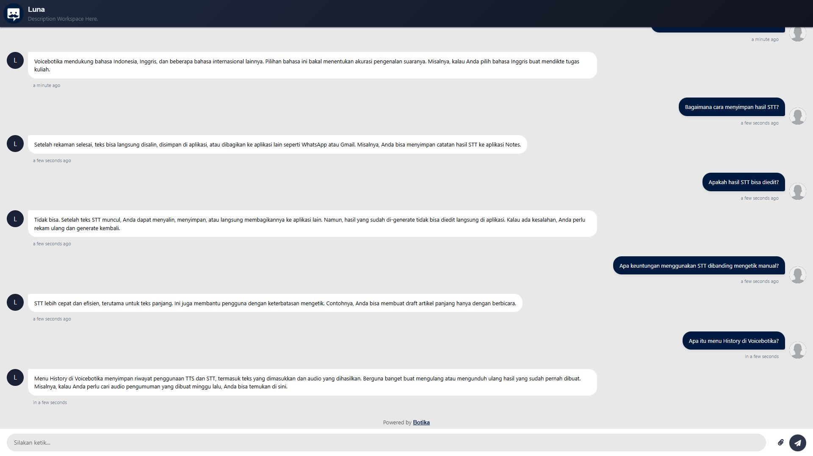 |
0.844 | PASS | 00:00:14 |
| Bagaimana cara menghapus riwayat di History? | Bagaimana cara menghapus riwayat di History? | Riwayat penggunaan di aplikasi Voicebotika tidak bisa dihapus. Semua aktivitas, termasuk hasil percobaan TTS atau interaksi lainnya, akan tersimpan otomatis di aplikasi dan tidak dapat dihapus oleh pengguna. | Sayangnya, Anda tidak bisa menghapus riwayat penggunaan di aplikasi Voicebotika. Semua aktivitas, termasuk hasil TTS dan interaksi lainnya, akan tersimpan otomatis di aplikasi dan tidak dapat dihapus oleh pengguna. | Auto: ✓ Jawaban sudah sangat baik dan lengkap. Semua informasi penting yang diharapkan sudah tercakup dengan akurat. |
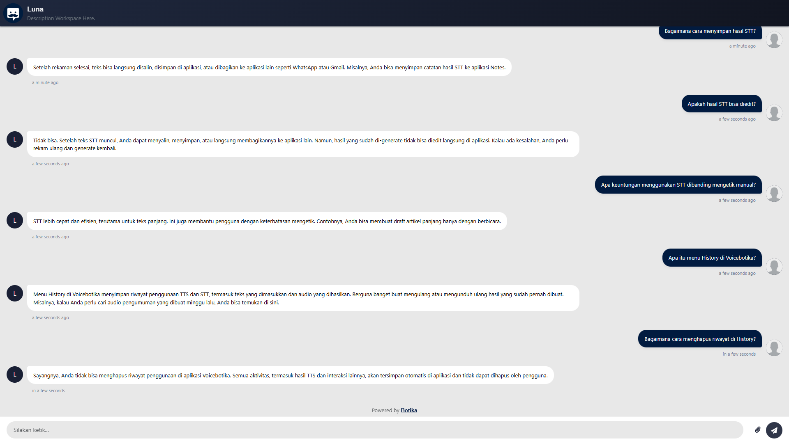 |
0.917 | PASS | 00:00:11 |
| Bagaimana cara mengunduh hasil TTS dari History? | Bagaimana cara mengunduh hasil TTS dari History? | Anda bisa mengunduh kembali hasil TTS yang sudah pernah dibuat di Voicebotika. Dengan begitu, file audio bisa disimpan dan digunakan lagi sesuai kebutuhan. Berikut caranya: 1) Buka menu History dan pilih hasil TTS. 2) Klik ikon Download. 3) File audio akan tersimpan di perangkat pada folder /download/voicebotika/tts/ Contoh: user mengunduh ulang audio “Selamat datang di toko kami” untuk dipakai lagi. | Untuk mengunduh hasil TTS dari History di Voicebotika, ikuti langkah-langkah ini: 1. Buka menu History dan pilih hasil TTS yang ingin diunduh. 2. Klik ikon Download. 3. File audio akan tersimpan di perangkat Anda pada folder `/download/voicebotika/tts/`. Dengan cara ini, Anda bisa menyimpan dan menggunakan ulang file audio sesuai kebutuhan. | Auto: ✓ Jawaban sudah cukup lengkap mencakup poin-poin utama. Bisa ditambahkan detail tentang kembali, sudah untuk lebih komprehensif. |
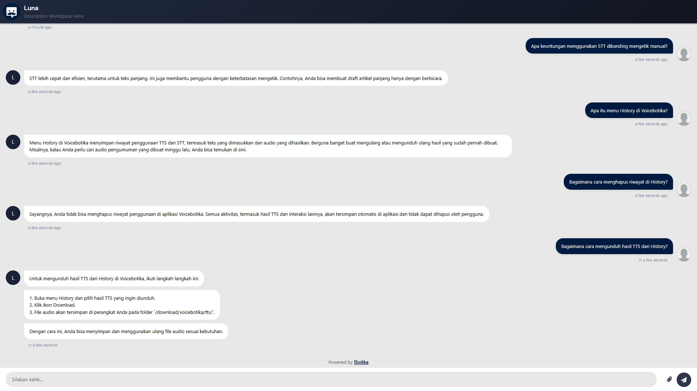 |
0.745 | PASS | 00:00:37 |
| Apakah History tersimpan selamanya? | Apakah History tersimpan selamanya? | Tidak. History biasanya menyimpan data dalam jangka waktu tertentu. Disarankan mengunduh hasil penting agar tidak hilang. Contoh: user segera unduh hasil audio untuk arsip. | Tidak, History tidak tersimpan selamanya. Data biasanya disimpan dalam jangka waktu tertentu. Disarankan untuk mengunduh hasil penting agar tidak hilang, misalnya segera unduh hasil audio untuk arsip. | Auto: ✓ Jawaban sudah cukup lengkap mencakup poin-poin utama. Bisa ditambahkan detail tentang menyimpan, contoh untuk lebih komprehensif. |
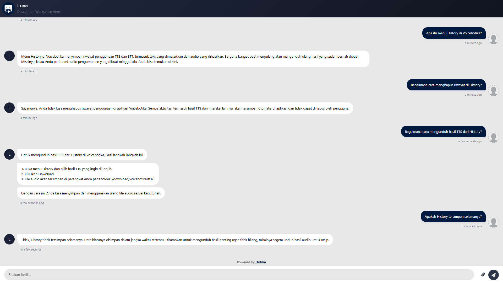 |
0.875 | PASS | 00:00:12 |
| Apa itu menu saldo di Voicebotika? | Apa itu menu saldo di Voicebotika? | Menu Saldo menampilkan status paket layanan Anda (gratis atau berbayar), jumlah saldo yang tersedia, serta opsi top-up saldo atau paket. Contoh: user memeriksa apakah masih punya cukup saldo untuk generate audio. | Menu Saldo di Voicebotika menunjukkan status paket layanan Anda, apakah gratis atau berbayar, jumlah saldo yang tersedia, dan opsi untuk top-up saldo atau paket. Misalnya, Anda bisa mengecek apakah masih punya cukup saldo untuk membuat audio. | Auto: ✓ Jawaban sudah cukup lengkap mencakup poin-poin utama. Bisa ditambahkan detail tentang menampilkan, serta untuk lebih komprehensif. |
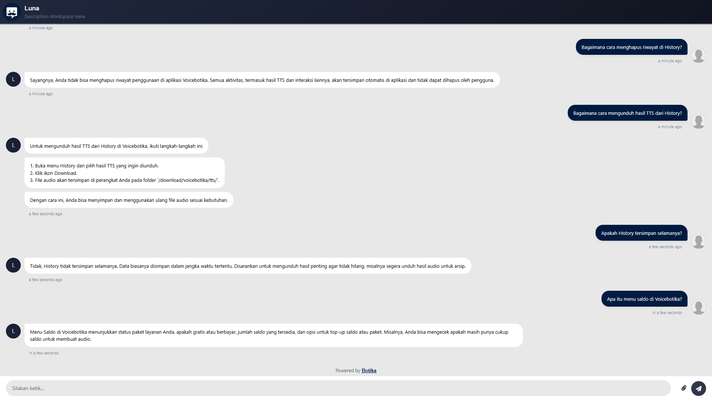 |
0.8 | PASS | 00:00:13 |
| Apa keuntungan berlangganan paket premium di Voicebotika? | Apa keuntungan berlangganan paket premium di Voicebotika? | Paket premium memberikan akses ke lebih banyak bahasa, pilihan suara eksklusif, kapasitas teks lebih panjang, serta hasil audio dengan kualitas lebih tinggi. Contoh: user premium bisa membuat audio 3.000 karakter sekaligus. | Berlangganan paket premium di Voicebotika memberikan beberapa keuntungan seperti akses ke lebih banyak bahasa, pilihan suara eksklusif, kapasitas teks lebih panjang, serta hasil audio dengan kualitas lebih tinggi. Misalnya, pengguna premium bisa membuat audio hingga 3.000 karakter sekaligus. Cocok banget buat kebutuhan profesional! | Auto: ✓ Jawaban sudah sangat baik dan lengkap. Semua informasi penting yang diharapkan sudah tercakup dengan akurat. |
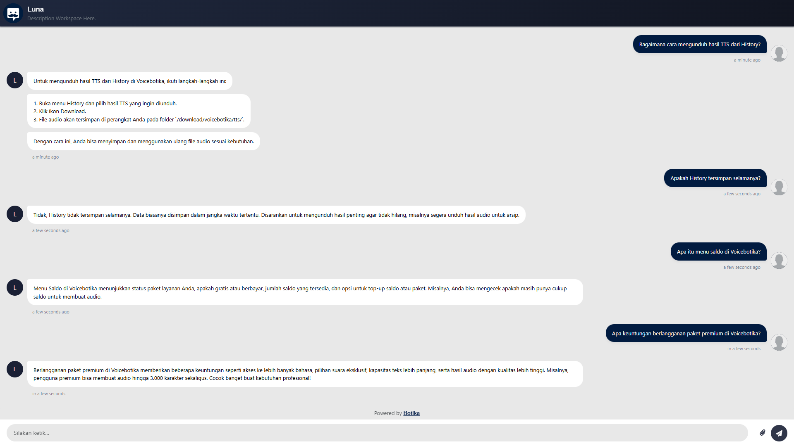 |
0.931 | PASS | 00:00:13 |
| Bagaimana cara upgrade paket di Voicebotika? | Bagaimana cara upgrade paket di Voicebotika? | Jika Anda ingin meningkatkan layanan di Voicebotika, tersedia pilihan paket berbayar yang bisa disesuaikan dengan kebutuhan. Proses upgrade paket sangat mudah dilakukan, cukup ikuti langkah berikut: 1) Masuk ke Akun, pilih Beli Paket, dan tentukan paket yang diinginkan. 2) Lakukan pembayaran dan konfirmasi. 3) Setelah berhasil, akun otomatis aktif ke paket baru. Contoh: user upgrade ke paket premium TTS atau STT untuk kebutuhan e-learning. | Untuk upgrade paket di Voicebotika, Anda bisa mengikuti langkah-langkah berikut: 1) Masuk ke akun Anda, pilih "Beli Paket", dan tentukan paket yang diinginkan. 2) Lakukan pembayaran dan konfirmasi. 3) Setelah pembayaran berhasil, akun Anda akan otomatis aktif ke paket baru. Misalnya, Anda bisa upgrade ke paket premium TTS atau STT sesuai kebutuhan e-learning. Gampang, kan? | Auto: ✓ Jawaban sudah cukup lengkap mencakup poin-poin utama. Bisa ditambahkan detail tentang jika, layanan untuk lebih komprehensif. |
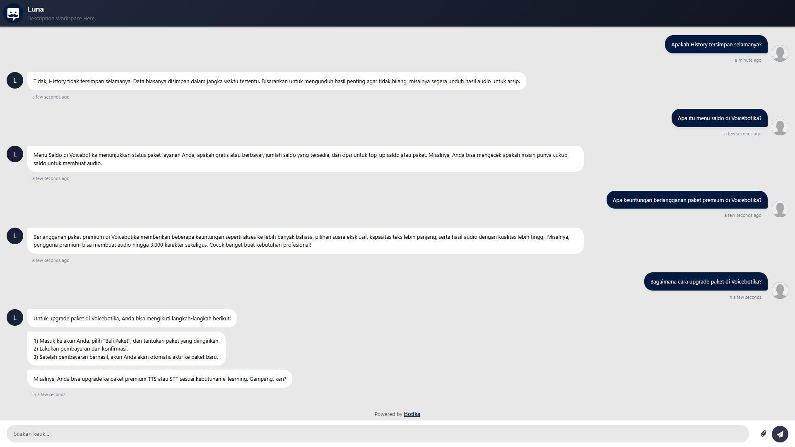 |
0.887 | PASS | 00:00:37 |
| Bagaimana cara cek jumlah saldo Voicebotika? | Bagaimana cara cek jumlah saldo Voicebotika? | Cara Mengecek Saldo di Voicebotika APPS Saldo digunakan untuk mengakses fitur berbayar seperti generate TTS dan STT. Dengan mengecek saldo, Anda bisa memastikan jumlah kredit mencukupi sebelum menggunakan layanan, misalnya untuk membuat audio panjang. Berikut caranya: 1) Masuk ke menu Akun. 2) Lihat bagian Saldo Anda. Di sana akan tampil jumlah saldo tersisa yang bisa digunakan untuk generate TTS atau STT. Contoh penggunaan: cek saldo terlebih dahulu sebelum membuat audio panjang agar proses tidak terhenti di tengah jalan. | Untuk cek jumlah saldo di Voicebotika Apps: 1) Masuk ke menu Akun. 2) Lihat bagian Saldo Anda. Di situ, Anda bisa lihat jumlah saldo yang tersisa untuk generate TTS atau STT. | Auto: ⚠ Jawaban hanya mencakup sebagian kecil informasi (mengecek dan saldo). Banyak informasi penting yang belum disebutkan seperti cara, mengakses, fitur. |
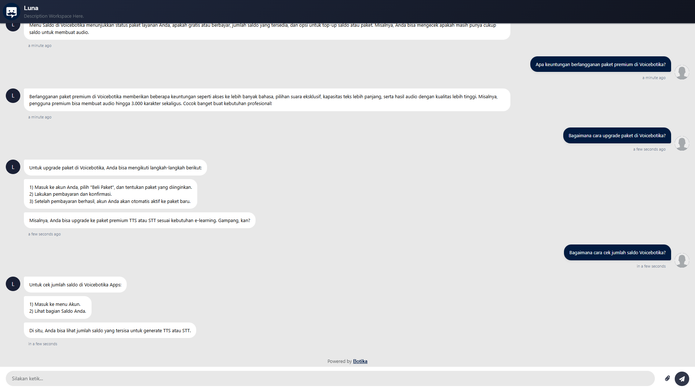 |
0.515 | FAILED | 00:00:12 |
| Bagaimana cara top-up saldo di Voicebotika? | Bagaimana cara top-up saldo di Voicebotika? | Cara Melakukan Top-up Saldo di Voicebotika APPS Untuk menggunakan fitur berbayar seperti TTS dan STT, Anda memerlukan saldo atau kredit. Top-up dapat dilakukan langsung melalui aplikasi dengan berbagai metode pembayaran. Berikut langkah-langkahnya: 1) Buka menu Akun dan klik Top-up. 2) Pilih jumlah kredit serta metode pembayaran yang diinginkan. 3) Selesaikan pembayaran. Setelah transaksi berhasil, kredit akan otomatis bertambah di akun Anda. Contoh penggunaan: user melakukan top-up Rp10.000 untuk membuat audio iklan. | Untuk top-up saldo di Voicebotika Apps: | Auto: ✗ Jawaban tidak cukup relevan dengan yang diharapkan. Sebagian besar informasi penting seperti cara, melakukan, menggunakan tidak disebutkan. |
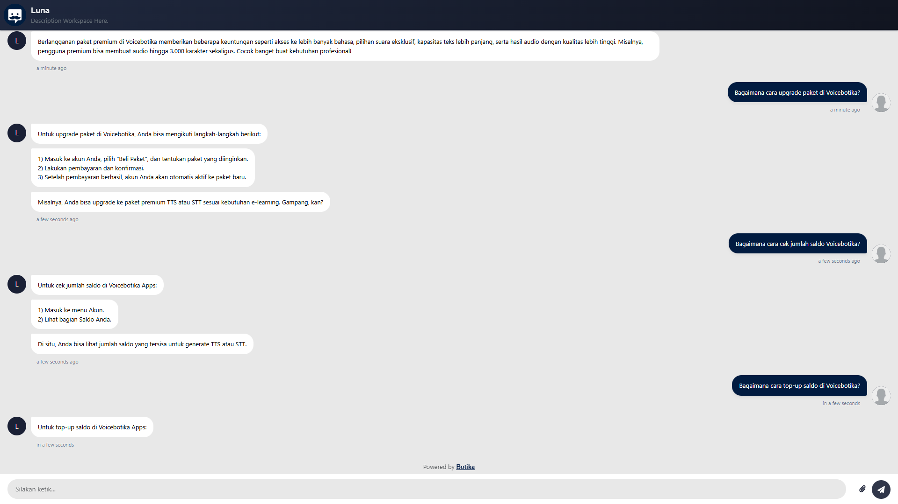 |
0.203 | FAILED | 00:00:10 |
| Apakah ada riwayat transaksi di Voicebotika? | Apakah ada riwayat transaksi di Voicebotika? | Ya. Semua riwayat top-up atau pembayaran paket akan tersimpan di menu Riwayat Pembayaran. Hal ini memudahkan pencatatan dan pengecekan. Contoh: user keuangan memeriksa invoice top-up bulan lalu. | Ya, semua riwayat top-up atau pembayaran paket akan tersimpan di menu Riwayat Pembayaran, jadi Anda bisa cek dengan mudah! | Auto: ⚠ Jawaban sudah benar untuk bagian semua dan riwayat, tapi masih kurang lengkap. Perlu ditambahkan informasi tentang pencatatan, contoh, user. |
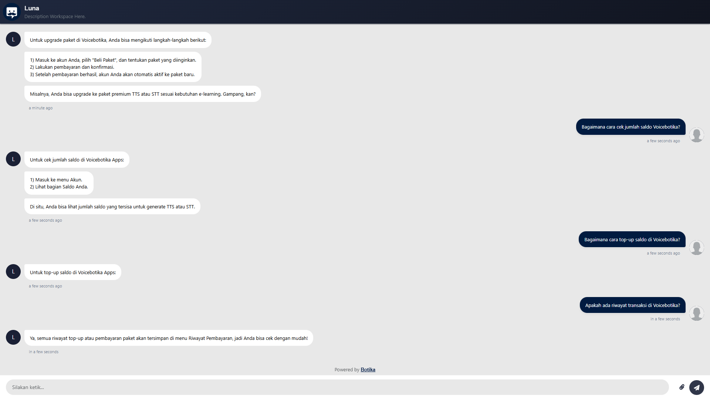 |
0.6 | FAILED | 00:00:11 |
| Bagaimana cara melihat profil pengguna di Voicebotika? | Bagaimana cara melihat profil pengguna di Voicebotika? | Cara Melihat Profil Akun di Voicebotika APPS Menu profil membantu Anda memastikan data akun yang sedang digunakan, seperti nama, email, dan status paket. Dengan begitu, Anda bisa mengecek apakah akun yang aktif sudah sesuai. Berikut cara mengaksesnya: 1) Klik ikon Profil di pojok kanan atas. 2) Halaman profil akan menampilkan nama, email, dan status paket. Contoh penggunaan: user mengecek email terdaftar di aplikasi untuk memastikan akun yang dipakai benar. | Untuk melihat profil pengguna di Voicebotika Apps: 1) Klik ikon Profil di pojok kanan atas. 2) Halaman profil akan menampilkan nama, email, dan status paket Anda. Mudah, kan? | Auto: ⚠ Jawaban hanya mencakup sebagian kecil informasi (melihat dan profil). Banyak informasi penting yang belum disebutkan seperti cara, akun, menu. |
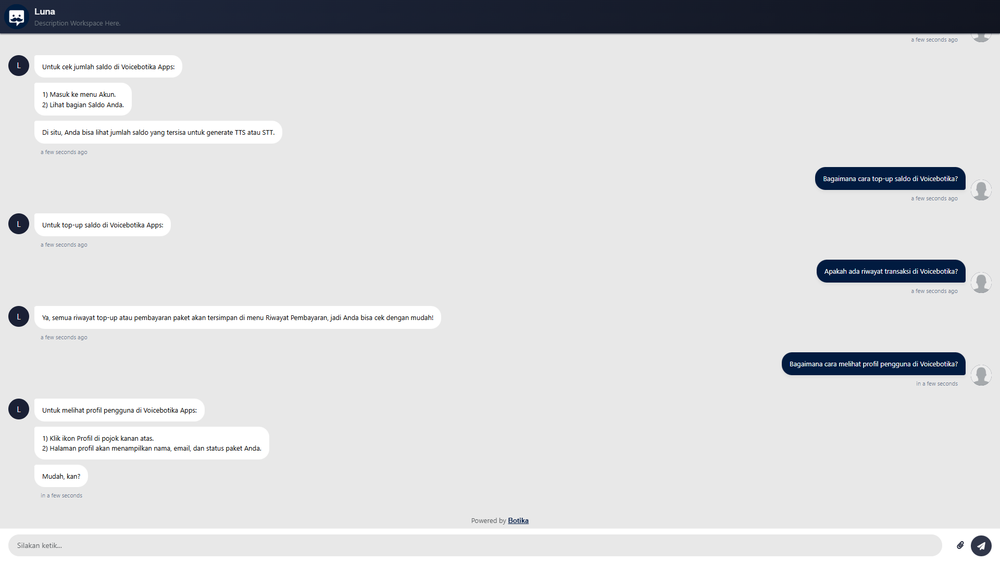 |
0.532 | FAILED | 00:00:37 |
| Bagaimana cara logout dari Voicebotika? | Bagaimana cara logout dari Voicebotika? | Cara Logout dari Voicebotika APPS Logout digunakan untuk keluar dari akun agar data tetap aman, terutama jika aplikasi dipakai di perangkat bersama atau publik. Berikut langkah-langkahnya: 1) Klik ikon Profil. 2) Pilih Logout. 3) Konfirmasi untuk keluar. Contoh penggunaan: user melakukan logout setelah selesai menggunakan aplikasi di HP kantor untuk menjaga keamanan akun. | Untuk logout dari Voicebotika: 1) Buka menu Akun. 2) Cari fitur Logout di bagian bawah, lalu klik. 3) Muncul pop-up konfirmasi; klik Logout untuk keluar. Ingat untuk logout dengan benar, ya, biar akun tetap aman. | Auto: ⚠ Jawaban hanya mencakup sebagian kecil informasi (logout dan dari). Banyak informasi penting yang belum disebutkan seperti cara, apps, agar. |
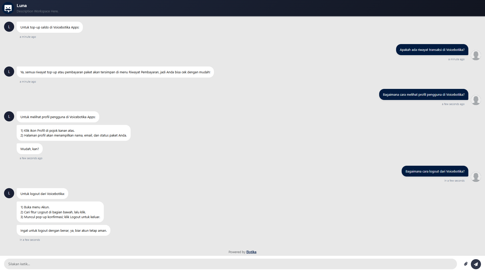 |
0.458 | FAILED | 00:00:13 |
| Apa itu menu Settings di Voicebotika? | Apa itu menu Settings di Voicebotika? | Settings adalah pusat pengaturan aplikasi Voicebotika. Di menu ini pengguna bisa menyesuaikan bahasa tampilan aplikasi, mengatur notifikasi, mengelola izin (akses mikrofon, penyimpanan, notifikasi), serta melakukan konfigurasi lainnya. Settings memudahkan Anda menyesuaikan aplikasi sesuai kebutuhan perangkat. | Menu Settings di Voicebotika adalah pusat pengaturan aplikasi. Di sini, Anda bisa menyesuaikan bahasa tampilan aplikasi, mengatur notifikasi, mengelola izin seperti akses mikrofon, penyimpanan, notifikasi, dan konfigurasi lainnya. Ini memudahkan Anda menyesuaikan aplikasi sesuai kebutuhan perangkat Anda. | Auto: ✓ Jawaban sudah sangat baik dan lengkap. Semua informasi penting yang diharapkan sudah tercakup dengan akurat. |
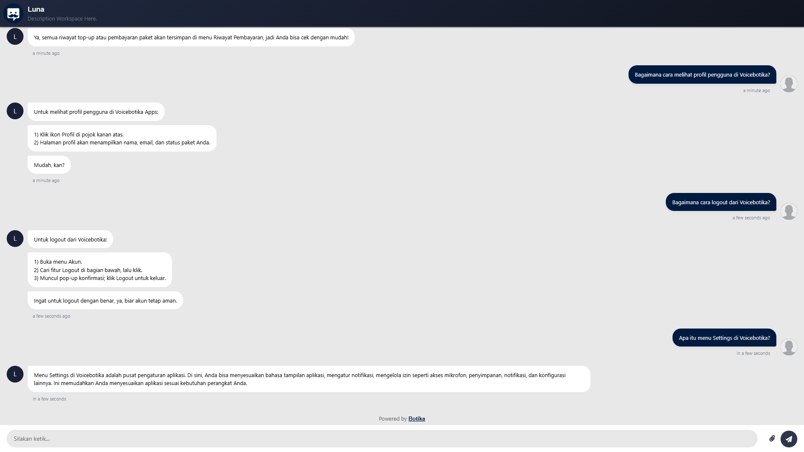 |
0.909 | PASS | 00:00:13 |
| Bagaimana cara mengubah bahasa aplikasi di Settings? | Bagaimana cara mengubah bahasa aplikasi di Settings? | Voicebotika menyediakan pilihan bahasa tampilan agar pengguna lebih nyaman saat menggunakan aplikasi. Anda bisa mengganti bahasa sesuai preferensi dengan langkah berikut: 1) Masuk ke Settings, lalu pilih Bahasa Aplikasi. 2) Pilih salah satu bahasa dari daftar 3) tekan Simpan. Setelah itu semua menu dan teks aplikasi akan tampil dengan bahasa pilihan. Hal ini memudahkan pengguna yang lebih nyaman memakai bahasa tertentu, misalnya English atau Bahasa Indonesia. | Untuk mengubah bahasa aplikasi di Settings, ikuti langkah ini: 1) Masuk ke Settings, lalu pilih Bahasa Aplikasi. 2) Pilih bahasa dari daftar yang tersedia. 3) Tekan Simpan. Setelah itu, semua menu dan teks aplikasi akan tampil dengan bahasa pilihan Anda. Gampang, kan? | Auto: ⚠ Jawaban sudah benar untuk bagian menyediakan dan pilihan, tapi masih kurang lengkap. Perlu ditambahkan informasi tentang voicebotika, agar, pengguna. |
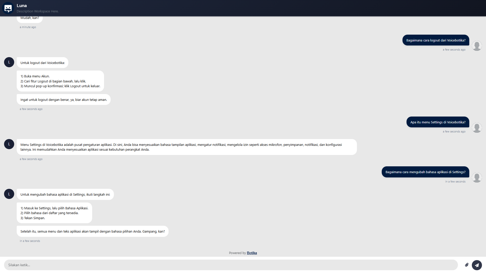 |
0.621 | FAILED | 00:00:12 |
| Bagaimana cara memberi izin aplikasi di Voicebotika? | Bagaimana cara memberi izin aplikasi di Voicebotika? | Saat pertama kali menggunakan fitur TTS atau STT, aplikasi akan meminta izin akses ke mikrofon, penyimpanan, atau notifikasi. Pilih Izinkan agar fitur berfungsi. Jika terlanjur ditolak, 1) buka Settings Android, lalu cari dan buka Aplikasi. 2) Pilih Voicebotika. 3) Setelah itu Izin, lalu aktifkan kembali izin yang diperlukan. Tanpa izin, fitur tertentu tidak dapat berjalan. | Saat pertama kali menggunakan fitur TTS atau STT, aplikasi akan meminta izin akses ke mikrofon, penyimpanan, atau notifikasi. Pilih "Izinkan" agar fitur berfungsi. Kalau sudah terlanjur ditolak, Anda bisa: 1) Buka Settings Android, lalu cari dan buka Aplikasi. 2) Pilih Voicebotika. 3) Buka Izin, lalu aktifkan kembali izin yang diperlukan. Tanpa izin ini, fitur tertentu tidak dapat berjalan. | Auto: ✓ Jawaban sudah sangat baik dan lengkap. Semua informasi penting yang diharapkan sudah tercakup dengan akurat. |
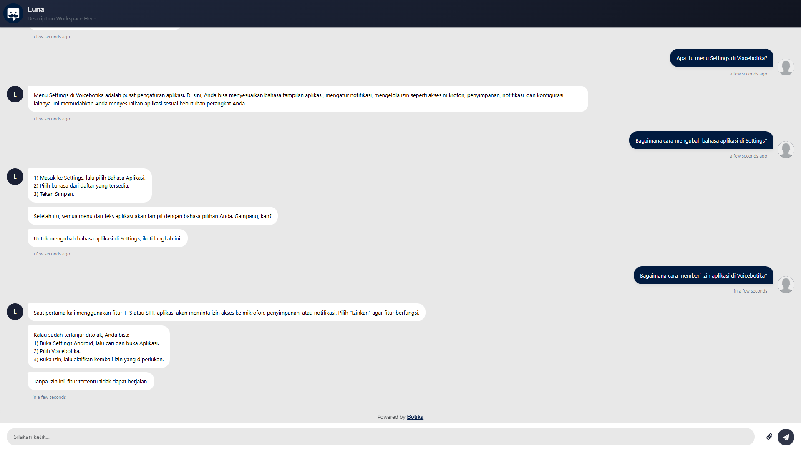 |
0.957 | PASS | 00:00:37 |
| Bagaimana cara mengatur volume notifikasi di Voicebotika? | Bagaimana cara mengatur volume notifikasi di Voicebotika? | Voicebotika APPS tidak menyediakan fitur khusus untuk mengatur volume notifikasi. Sehingga untuk volume notifikasi akan otomatis mengikuti volume device (volume media). | Di Voicebotika APPS, volume notifikasi mengikuti volume perangkat Anda, seperti volume media. Jadi, Anda bisa mengaturnya langsung dari pengaturan suara di perangkat Anda. | Auto: ⚠ Jawaban hanya mencakup sebagian kecil informasi (voicebotika dan apps). Banyak informasi penting yang belum disebutkan seperti tidak, fitur, khusus. |
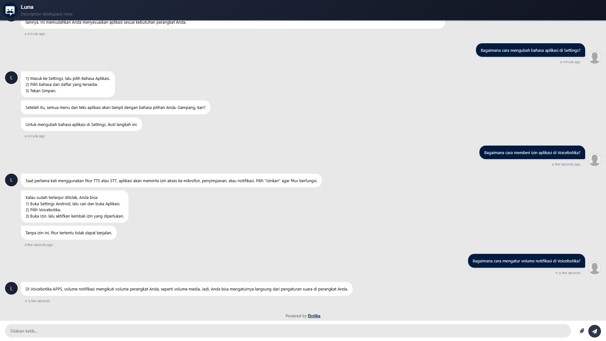 |
0.571 | FAILED | 00:00:12 |
| Apa itu menu Help di Voicebotika? | Apa itu menu Help di Voicebotika? | Menu Help akan mengarahkan pengguna ke nomor WhatsApp Customer Service Luna. Melalui fitur ini, pengguna dapat langsung menghubungi tim CS untuk bertanya atau mendapatkan bantuan terkait penggunaan layanan. | Menu Help di Voicebotika akan mengarahkan Anda ke nomor WhatsApp Customer Service Luna. Lewat fitur ini, Anda bisa langsung menghubungi tim CS buat bertanya atau minta bantuan terkait penggunaan layanan. | Auto: ✓ Jawaban sudah cukup lengkap mencakup poin-poin utama. Bisa ditambahkan detail tentang melalui, dapat untuk lebih komprehensif. |
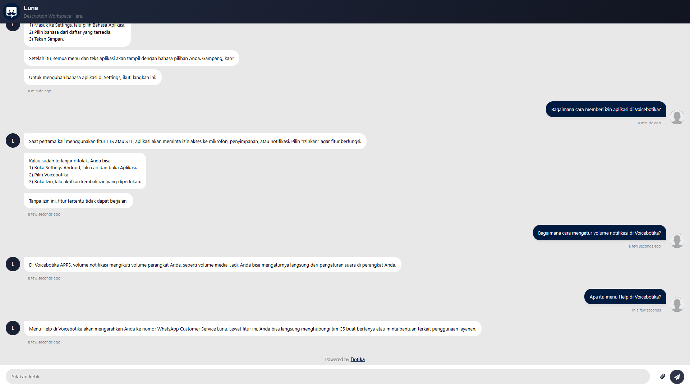 |
0.833 | PASS | 00:00:13 |
| Bagaimana cara menghubungi customer support Voicebotika? | Bagaimana cara menghubungi customer support Voicebotika? | Cara Menghubungi Tim Dukungan Voicebotika APPS Jika Anda mengalami kendala atau memiliki pertanyaan, Anda dapat langsung menghubungi tim support melalui WhatsApp. Berikut langkah-langkahnya: 1) Masuk ke menu Help, lalu pilih Hubungi Kami. 2) Maka akan tersedia opsi untuk menghubungi support via WhatsApp 3) Lalu isi pertanyaan atau kendala Anda. Tim dukungan akan membalas sesuai jalur komunikasi yang dipilih. | Anda bisa menghubungi tim dukungan Voicebotika melalui WhatsApp. Caranya: 1) Masuk ke menu Help, lalu pilih Hubungi Kami. 2) Akan tersedia opsi untuk menghubungi support via WhatsApp. 3) Isi pertanyaan atau kendala Anda. Tim dukungan bakal balas sesuai jalur komunikasi yang dipilih. | Auto: ✓ Jawaban sudah cukup lengkap mencakup poin-poin utama. Bisa ditambahkan detail tentang apps, jika untuk lebih komprehensif. |
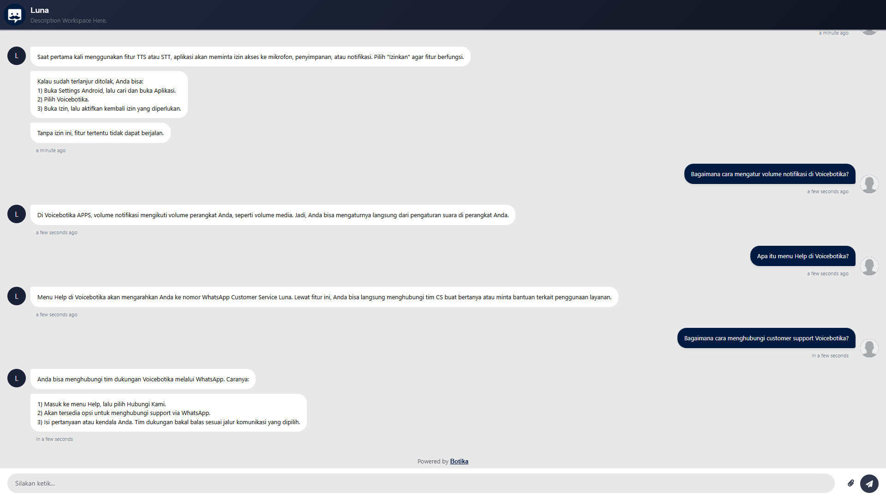 |
0.8 | PASS | 00:00:12 |
| Apakah Voicebotika bisa dipakai tanpa internet? | Apakah Voicebotika bisa dipakai tanpa internet? | Tidak sepenuhnya. Fitur utama seperti TTS, STT, dan Voicebot Selena membutuhkan koneksi internet karena pemrosesan dilakukan di server. Tanpa internet, fitur ini tidak dapat berfungsi. Namun, audio TTS yang sudah diunduh tetap bisa diputar secara offline. | Tidak, Voicebotika tidak bisa digunakan tanpa koneksi internet. Sistem ini butuh internet buat ngirim pertanyaan ke server dan terima jawaban dari sana. Jadi, pastikan Anda punya koneksi internet yang stabil, ya! | Auto: ⚠ Jawaban hanya mencakup sebagian kecil informasi (tidak dan sepenuhnya). Banyak informasi penting yang belum disebutkan seperti fitur, utama, seperti. |
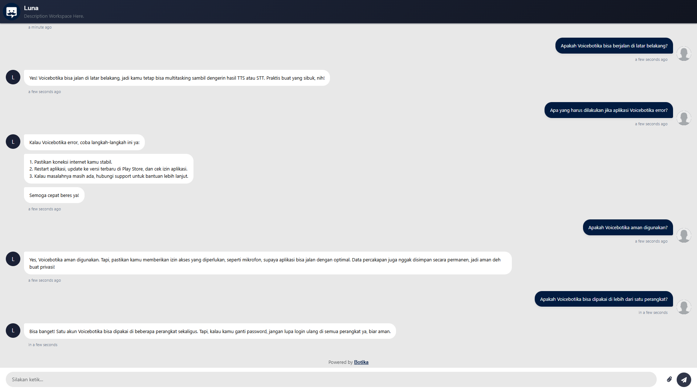 |
0.4 | FAILED | 00:00:12 |
| Apa saja perangkat yang mendukung Voicebotika? | Apa saja perangkat yang mendukung Voicebotika? | Voicebotika dapat digunakan di perangkat Android dengan sistem operasi Android 5.0 (Lollipop) atau lebih baru. Aplikasi ini tidak tersedia untuk perangkat iOS. Pastikan juga perangkat memiliki cukup ruang penyimpanan dan koneksi internet yang stabil. | Voicebotika bisa digunakan di perangkat Android dengan sistem operasi Android 5.0 (Lollipop) atau yang lebih baru. Sayangnya, aplikasi ini nggak tersedia untuk perangkat iOS. Jangan lupa, pastikan perangkat Anda punya ruang penyimpanan yang cukup dan koneksi internet yang stabil! | Auto: ✓ Jawaban sudah cukup lengkap mencakup poin-poin utama. Bisa ditambahkan detail tentang dapat, tidak untuk lebih komprehensif. |
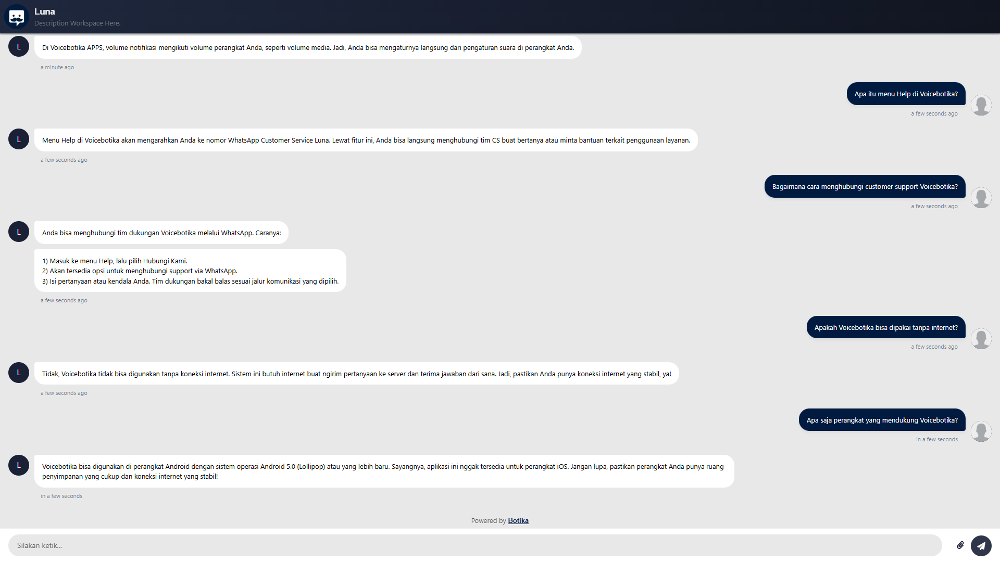 |
0.862 | PASS | 00:00:13 |
| Apakah Voicebotika tersedia di iOS? | Apakah Voicebotika tersedia di iOS? | Saat ini, Voicebotika hanya tersedia di Android melalui Google Play Store. Belum ada versi resmi untuk iPhone/iOS. | Saat ini, Voicebotika belum ada untuk iOS. Aplikasi ini cuma tersedia di Android lewat Google Play Store. Tapi, kalau pakai iOS, Anda tetap bisa akses Botika lewat browser! | Auto: ⚠ Jawaban sudah benar untuk bagian saat dan voicebotika, tapi masih kurang lengkap. Perlu ditambahkan informasi tentang hanya, melalui, versi. |
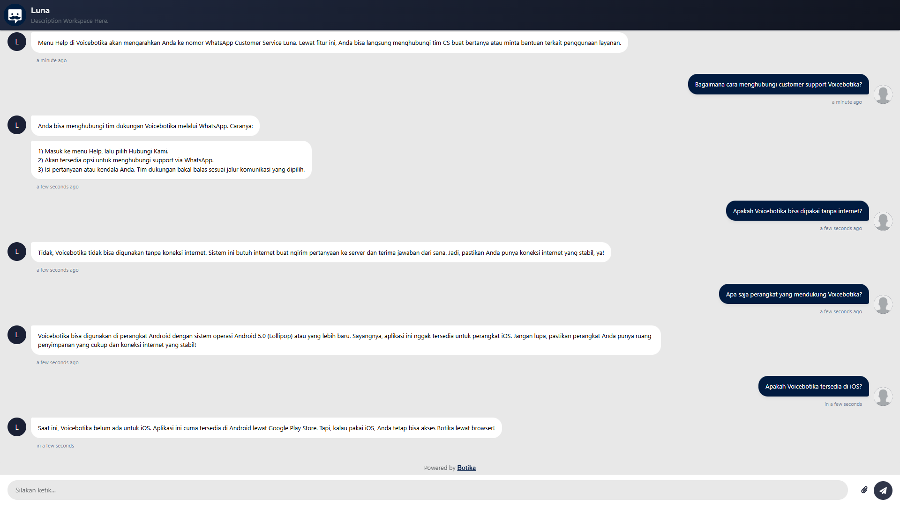 |
0.643 | FAILED | 00:00:15 |
| Apa itu fitur Upload Audio di Set Notification? | Apa itu fitur Upload Audio di Set Notification? | Upload Audio adalah opsi untuk mengganti notifikasi dengan file audio pribadi. Anda bisa memilih file berformat mp3, wav, atau m4a dari penyimpanan perangkat. Dengan ini, notifikasi bisa lebih unik dan personal. | Fitur Upload Audio di Set Notification adalah opsi yang memungkinkan Anda mengganti notifikasi aplikasi dengan file audio pribadi. Anda bisa memilih file berformat mp3, wav, atau m4a dari penyimpanan perangkat. Jadi, notifikasi Anda bisa lebih unik dan personal! | Auto: ✓ Jawaban sudah sangat baik dan lengkap. Semua informasi penting yang diharapkan sudah tercakup dengan akurat. |
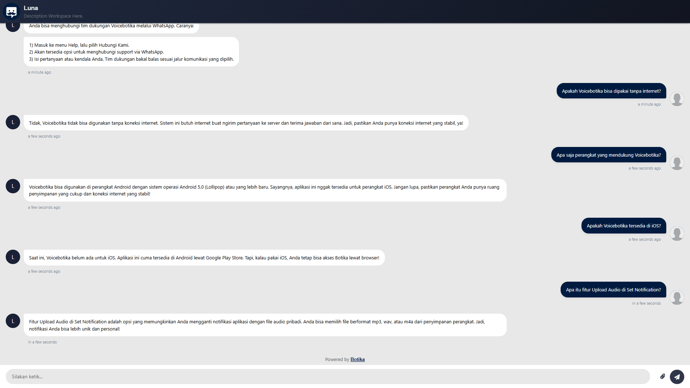 |
0.962 | PASS | 00:00:15 |
| Bagaimana cara menggunakan Upload Audio di Set Notification? | Bagaimana cara menggunakan Upload Audio di Set Notification? | Cara Mengatur Notifikasi dengan Upload Audio di Voicebotika APPS Selain menggunakan TTS atau galeri suara bawaan, Voicebotika APPS juga memungkinkan Anda mengunggah file audio sendiri untuk dijadikan nada notifikasi. Fitur ini cocok jika Anda ingin memakai nada unik atau rekaman pribadi. Berikut caranya: 1) Masuk ke Set Notif, lalu pilih aplikasi target (misalnya WhatsApp atau Gmail). 2) Pilih opsi Upload Audio, lalu cari file dari penyimpanan HP Anda. 3) Tekan Simpan. Setelah disimpan, file audio tersebut akan menjadi nada notifikasi untuk aplikasi yang dipilih. | Berikut cara menggunakan Upload Audio di Set Notification dengan Voicebotika APPS: 1) Masuk ke menu Set Notif, lalu pilih aplikasi target (misalnya WhatsApp atau Gmail). 2) Pilih opsi Upload Audio, lalu cari file dari penyimpanan HP Anda. 3) Tekan Simpan. Setelah disimpan, file audio tersebut akan menjadi nada notifikasi buat aplikasi yang dipilih. Simple banget, kan? | Auto: ✓ Jawaban sudah cukup lengkap mencakup poin-poin utama. Bisa ditambahkan detail tentang mengatur, selain untuk lebih komprehensif. |
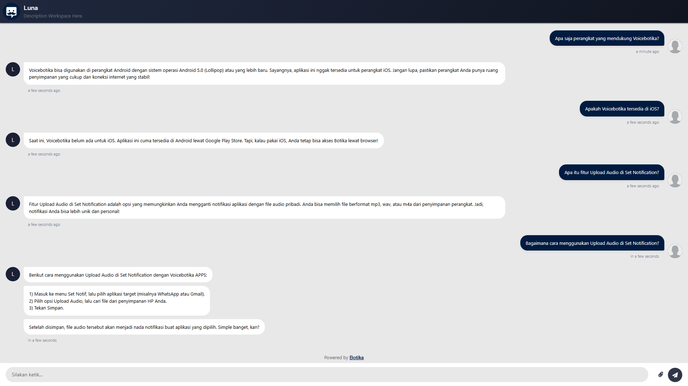 |
0.787 | PASS | 00:00:37 |
| Apakah ukuran file Upload Audio dibatasi? | Apakah ukuran file Upload Audio dibatasi? | Ya. File audio harus sesuai dengan batas ukuran maksimal (umumnya < 5 MB) agar bisa diproses dan diputar lancar. Jika file terlalu besar, potong durasi atau kompres terlebih dahulu. | Ya, file audio harus sesuai dengan batas ukuran maksimal (umumnya < 5 MB) agar bisa diproses dan diputar lancar. Kalau filenya terlalu besar, Anda bisa potong durasinya atau kompres dulu. | Auto: ✓ Jawaban sudah cukup lengkap mencakup poin-poin utama. Bisa ditambahkan detail tentang jika, terlebih untuk lebih komprehensif. | 0.875 | PASS | 00:00:12 | |
| Apa itu fitur Interupsi di Voicebot Selena? | Apa itu fitur Interupsi di Voicebot Selena? | Interupsi adalah tombol untuk menghentikan jawaban Selena di tengah percakapan. Fitur ini berguna jika Anda ingin segera memberi pertanyaan baru tanpa menunggu Selena menyelesaikan jawabannya. | Fitur Interupsi di Voicebot Selena adalah tombol untuk menghentikan jawaban Selena di tengah percakapan. Ini berguna kalau Anda ingin segera memberikan pertanyaan baru tanpa menunggu jawaban Selena selesai. Jadi, bisa langsung tanya-tanya terus tanpa jeda! | Auto: ✓ Jawaban sudah sangat baik dan lengkap. Semua informasi penting yang diharapkan sudah tercakup dengan akurat. | 0.913 | PASS | 00:00:12 | |
| Bagaimana cara mengakhiri sesi Voicebot Selena? | Bagaimana cara mengakhiri sesi Voicebot Selena? | Untuk menutup sesi, tekan tombol Tutup di layar Voicebot Selena. Setelah ditekan, percakapan berakhir dan Anda kembali ke menu utama aplikasi. | Untuk mengakhiri sesi Voicebot Selena, Anda cukup tekan tombol "Tutup" di layar Voicebot Selena. Setelah itu, percakapan akan berakhir dan Anda akan kembali ke menu utama aplikasi. Simple banget, kan? | Auto: ✓ Jawaban sudah sangat baik dan lengkap. Semua informasi penting yang diharapkan sudah tercakup dengan akurat. | 1 | PASS | 00:00:13 | |
| Apakah Voicebot Selena selalu butuh internet? | Apakah Voicebot Selena selalu butuh internet? | Ya. Selena berbasis AI cloud yang membutuhkan koneksi internet agar bisa memahami pertanyaan dan memberikan jawaban. Tanpa internet, Selena tidak dapat merespons. | Ya, Selena selalu butuh koneksi internet karena prosesnya dilakukan di cloud. Tanpa internet, Selena nggak bisa memahami pertanyaan atau memberikan jawaban. Jadi, pastikan koneksi internet Anda stabil saat menggunakan Selena, ya! | Auto: ✓ Jawaban sudah cukup lengkap mencakup poin-poin utama. Bisa ditambahkan detail tentang berbasis, agar untuk lebih komprehensif. | 0.737 | PASS | 00:00:15 | |
| Apakah suara TTS bisa digunakan sebagai alarm? | Apakah suara TTS bisa digunakan sebagai alarm? | Bisa, Hasil audio dari TTS Aplikasi Voicebotika juga dipakai sebagai nada alarm di ponsel Anda. Dengan begitu, alarm bisa terdengar lebih personal sesuai kebutuhan. Berikut caranya: 1) generate audio TTS, lalu unduh file. 2) buka aplikasi alarm bawaan HP, dan pilih nada alarm. 3) pilih file audio dari folder Download. Dengan begitu, alarm Anda bisa berbunyi dengan suara kustom dari TTS. | Bisa banget! Anda bisa menggunakan suara dari TTS Voicebotika sebagai nada alarm di ponsel Anda. Caranya simpel: 1) Generate audio TTS dan unduh filenya. 2) Buka aplikasi alarm bawaan ponsel Anda, lalu pilih nada alarm. 3) Pilih file audio dari folder Download. Jadi, alarm Anda bisa lebih personal dan sesuai kebutuhan! | Auto: ✓ Jawaban sudah cukup lengkap mencakup poin-poin utama. Bisa ditambahkan detail tentang hasil, juga untuk lebih komprehensif. | 0.788 | PASS | 00:00:37 | |
| Apakah hasil TTS bisa dibagikan ke WhatsApp? | Apakah hasil TTS bisa dibagikan ke WhatsApp? | Ya, hasil TTS di Voicebotika APPS bisa langsung dibagikan ke WhatsApp. Fitur ini memudahkan Anda untuk mengirim audio ke teman, keluarga, atau rekan kerja tanpa perlu menyimpannya terlebih dahulu. Berikut caranya: 1) Setelah generate, pilih opsi Share. 2) Pilih aplikasi WhatsApp. 3) Pilih kontak atau grup tujuan, lalu kirim. | Ya, bisa banget! Anda bisa langsung membagikan hasil TTS dari Voicebotika ke WhatsApp. Caranya gampang: setelah generate, pilih opsi Share, lalu pilih aplikasi WhatsApp. Pilih kontak atau grup yang diinginkan, terus kirim deh! | Auto: ⚠ Jawaban sudah benar untuk bagian hasil dan voicebotika, tapi masih kurang lengkap. Perlu ditambahkan informasi tentang apps, dibagikan, fitur. | 0.625 | FAILED | 00:00:37 | |
| Apakah hasil STT bisa dipakai untuk menulis email? | Apakah hasil STT bisa dipakai untuk menulis email? | Ya, hasil STT di Voicebotika APPS bisa langsung digunakan untuk menulis email. Fitur ini sangat berguna jika Anda ingin membuat email panjang tanpa harus mengetik manual, cukup dengan berbicara. Berikut caranya: 1) Setelah hasil STT muncul, salin teks. 2) Buka aplikasi email (misalnya Gmail). 3) Tempel teks ke badan email, lalu kirim. Dengan begitu, Anda bisa menulis email lebih cepat dan efisien hanya dengan menggunakan suara. | Ya, hasil STT di Voicebotika APPS bisa langsung digunakan untuk menulis email. Anda tinggal salin teks hasil STT, tempel di badan email, dan kirim. Praktis, kan? | Auto: ⚠ Jawaban hanya mencakup sebagian kecil informasi (hasil dan voicebotika). Banyak informasi penting yang belum disebutkan seperti fitur, sangat, berguna. | 0.5 | FAILED | 00:00:12 | |
| Apakah Voicebotika mendukung multi-akun? | Apakah Voicebotika mendukung multi-akun? | Ya, Voicebotika APPS mendukung penggunaan multi-akun. Sehingga Anda dapat login dengan lebih dari satu akun pada perangkat yang sama, sehingga memudahkan Anda untuk memisahkan akun pribadi dan akun kerja, atau mengelola beberapa akun sekaligus. | Ya, Voicebotika Apps mendukung multi-akun. Jadi, Anda bisa login dengan lebih dari satu akun di perangkat yang sama. Cocok buat misahin akun pribadi dan kerja atau kalau Anda ngelola beberapa akun sekaligus! | Auto: ✓ Jawaban sudah cukup lengkap mencakup poin-poin utama. Bisa ditambahkan detail tentang penggunaan, sehingga untuk lebih komprehensif. | 0.758 | PASS | 00:00:13 | |
| Apa itu fitur Galeri Suara di Set Notification? | Apa itu fitur Galeri Suara di Set Notification? | Galeri Suara adalah koleksi audio bawaan Voicebotika yang bisa langsung dipakai untuk mengganti nada notifikasi aplikasi. Anda tidak perlu upload atau membuat audio sendiri. Pengguna cukup memilih suara dari galeri, memutar preview, lalu menyimpannya sebagai nada notifikasi. | Galeri Suara adalah koleksi audio bawaan Voicebotika yang bisa langsung dipakai untuk mengganti nada notifikasi aplikasi. Jadi, Anda nggak perlu upload atau bikin audio sendiri. Tinggal pilih suara dari galeri, preview, dan simpan sebagai nada notifikasi. Simpel, kan? | Auto: ✓ Jawaban sudah cukup lengkap mencakup poin-poin utama. Bisa ditambahkan detail tentang tidak, membuat untuk lebih komprehensif. | 0.784 | PASS | 00:00:13 | |
| Bagaimana cara memilih suara dari Galeri Suara? | Bagaimana cara memilih suara dari Galeri Suara? | Cara Menggunakan Galeri Suara sebagai Notifikasi di Voicebotika APPS Selain membuat suara sendiri dengan TTS atau mengunggah file audio, Anda juga bisa memilih nada dari Galeri Suara bawaan Voicebotika. Koleksi ini berisi berbagai pilihan suara yang siap dipakai tanpa perlu membuat dari awal. Berikut langkah-langkahnya: 1) Masuk ke menu Set Notif, lalu pilih aplikasi target. 2) Pilih opsi Galeri Suara dan telusuri daftar suara yang tersedia. 3) Klik tombol Play untuk preview, lalu pilih salah satu dan tekan Simpan. Setelah disimpan, suara tersebut langsung aktif sebagai notifikasi untuk aplikasi yang dipilih. | Berikut langkah-langkah untuk memilih suara dari Galeri Suara di Voicebotika: 1) Masuk ke menu Set Notif dan pilih aplikasi target. 2) Pilih opsi Galeri Suara dan telusuri daftar suara yang tersedia. 3) Klik tombol Play untuk mendengarkan preview, lalu pilih salah satu dan tekan Simpan. Setelah disimpan, suara tersebut langsung aktif sebagai notifikasi untuk aplikasi yang Anda pilih. Mudah, kan? | Auto: ✓ Jawaban sudah cukup lengkap mencakup poin-poin utama. Bisa ditambahkan detail tentang cara, apps untuk lebih komprehensif. | 0.756 | PASS | 00:00:37 | |
| Apakah suara di Galeri Suara gratis digunakan? | Apakah suara di Galeri Suara gratis digunakan? | Ya. Semua suara bawaan yang ada di Galeri Suara bisa dipakai secara gratis oleh pengguna Voicebotika, tanpa memerlukan kredit tambahan. | Ya, semua suara bawaan di Galeri Suara bisa dipakai secara gratis oleh pengguna Voicebotika. Nggak perlu khawatir soal biaya tambahan! | Auto: ✓ Jawaban sudah baik dan mencakup sebagian besar informasi yang dibutuhkan. Akan lebih sempurna jika ditambahkan informasi tentang tanpa dan memerlukan. | 0.882 | PASS | 00:00:11 | |
| Apakah Galeri Suara bisa ditambahkan dengan audio baru? | Apakah Galeri Suara bisa ditambahkan dengan audio baru? | Tidak. Galeri Suara berisi audio bawaan dari aplikasi yang disediakan developer. Jika ingin menambahkan audio pribadi, gunakan opsi Upload Audio. | Tidak, Galeri Suara berisi audio bawaan dari aplikasi yang disediakan developer. Kalau Anda mau menambahkan audio pribadi, bisa gunakan opsi Upload Audio. | Auto: ✓ Jawaban sudah sangat baik dan lengkap. Semua informasi penting yang diharapkan sudah tercakup dengan akurat. | 0.9 | PASS | 00:00:11 | |
| Apa itu menu Credits di Voicebotika? | Apa itu menu Credits di Voicebotika? | Credits adalah saldo virtual yang digunakan untuk mengakses fitur berbayar di Voicebotika, terutama TTS. Setiap teks yang diubah menjadi audio akan mengurangi sejumlah kredit sesuai jumlah karakter. | Credits adalah saldo virtual di Voicebotika yang dipakai buat akses fitur berbayar, terutama Text-to-Speech (TTS). Setiap teks yang diubah jadi audio bakal mengurangi sejumlah kredit sesuai jumlah karakter. | Auto: ✓ Jawaban sudah sangat baik dan lengkap. Semua informasi penting yang diharapkan sudah tercakup dengan akurat. | 0.92 | PASS | 00:00:11 | |
| Bagaimana cara memantau pemakaian Credits? | Bagaimana cara memantau pemakaian Credits? | Masuk ke menu Akun dan lihat bagian jumlah saldo. Dari sana Anda bisa melihat berapa kredit yang tersisa dan riwayat penggunaannya. Dengan ini Anda bisa mengatur penggunaan agar saldo tidak cepat habis. | Masuk ke menu Akun dan cek bagian jumlah saldo. Dari sana, Anda bisa lihat berapa kredit yang tersisa dan riwayat penggunaannya. Ini membantu Anda mengatur penggunaan biar saldo nggak cepat habis. | Auto: ✓ Jawaban sudah cukup lengkap mencakup poin-poin utama. Bisa ditambahkan detail tentang dengan, agar untuk lebih komprehensif. | 0.893 | PASS | 00:00:13 | |
| Apa yang terjadi jika Credits habis? | Apa yang terjadi jika Credits habis? | Jika saldo kredit habis, Anda tidak dapat menggunakan fitur berbayar seperti generate TTS panjang atau suara premium. Untuk melanjutkan, Anda harus melakukan top-up melalui menu Beli paket pada halaman Akun. | Kalau saldo Credits habis, Anda nggak bisa pakai fitur berbayar seperti generate TTS panjang atau suara premium. Anda juga nggak bisa kirim pesan broadcast atau balas pesan masuk dari pelanggan. Jadi, pastikan selalu cek saldo dan top-up sebelum habis ya! | Auto: ⚠ Jawaban hanya mencakup sebagian kecil informasi (saldo dan habis). Banyak informasi penting yang belum disebutkan seperti jika, kredit, tidak. | 0.429 | FAILED | 00:00:16 | |
| Apakah top-up Credits bisa dilakukan kapan saja? | Apakah top-up Credits bisa dilakukan kapan saja? | Bisa. Pengguna dapat melakukan top-up kapan saja melalui menu Top-up pada halaman akun. Setelah pembayaran berhasil, kredit langsung bertambah secara otomatis. | Bisa banget! Anda bisa melakukan top-up kapan saja lewat menu Top-up di halaman akun. Setelah pembayaran berhasil, kredit Anda akan langsung bertambah secara otomatis. | Auto: ✓ Jawaban sudah cukup lengkap mencakup poin-poin utama. Bisa ditambahkan detail tentang pengguna, dapat untuk lebih komprehensif. | 0.789 | PASS | 00:00:12 | |
| Apa itu invoice di menu Riwayat Pembayaran? | Apa itu invoice di menu Riwayat Pembayaran? | Invoice adalah catatan transaksi setiap kali Anda melakukan top-up atau pembayaran paket. Invoice bisa dilihat, diunduh, atau dicetak untuk keperluan arsip dan administrasi. | Invoice adalah catatan transaksi setiap kali Anda melakukan top-up atau pembayaran paket. Anda bisa melihat, mengunduh, atau mencetaknya untuk keperluan arsip dan administrasi. | Auto: ✓ Jawaban sudah cukup lengkap mencakup poin-poin utama. Bisa ditambahkan detail tentang dilihat, diunduh untuk lebih komprehensif. | 0.857 | PASS | 00:00:11 | |
| Apa itu fitur History di TTS/STT? | Apa itu fitur History di TTS/STT? | Fitur History merekam semua aktivitas TTS dan STT. Di dalamnya tersimpan teks yang pernah dimasukkan, hasil audio yang dibuat, serta transkrip dari rekaman suara. Fitur ini berguna untuk mengakses ulang hasil lama tanpa harus mengulang proses. | Fitur History di TTS/STT merekam semua aktivitas yang Anda lakukan, seperti teks yang pernah dimasukkan, hasil audio yang dibuat, dan transkrip dari rekaman suara. Fitur ini memudahkan Anda untuk mengakses ulang hasil lama tanpa perlu mengulang prosesnya. Cocok banget buat yang sering bolak-balik cek hasil sebelumnya! | Auto: ✓ Jawaban sudah cukup lengkap mencakup poin-poin utama. Bisa ditambahkan detail tentang dalamnya, tersimpan untuk lebih komprehensif. | 0.839 | PASS | 00:00:14 | |
| Bagaimana cara mencari hasil lama di History? | Bagaimana cara mencari hasil lama di History? | Cara Mencari Riwayat TTS/STT di Voicebotika APPS Voicebotika APPS menyimpan riwayat hasil TTS maupun STT agar mudah diakses kembali. Jika Anda ingin menemukan audio atau transkrip tertentu tanpa harus membuat ulang, gunakan fitur pencarian di menu History. Berikut caranya: 1) Masuk ke menu History, lalu gunakan kolom pencarian (Search). 2) Ketik kata kunci dari teks yang pernah dibuat. 3) Sistem akan menampilkan daftar hasil yang sesuai. Dengan cara ini, Anda bisa lebih cepat menemukan kembali hasil audio atau transkrip tertentu. | Anda bisa dengan mudah mencari hasil lama di History Voicebotika APPS. Caranya: 1) Masuk ke menu History dan gunakan kolom pencarian (Search). 2) Ketik kata kunci dari teks yang pernah dibuat. 3) Sistem akan menampilkan daftar hasil yang sesuai. Gampang, kan? Jadi, Anda bisa cepat menemukan kembali audio atau transkrip tertentu! | Auto: ✓ Jawaban sudah cukup lengkap mencakup poin-poin utama. Bisa ditambahkan detail tentang riwayat, menyimpan untuk lebih komprehensif. | 0.786 | PASS | 00:00:37 | |
| Apakah hasil di History bisa dibagikan langsung? | Apakah hasil di History bisa dibagikan langsung? | Bisa, hasil TTS atau STT di Aplikasi Voicebotika juga bisa langsung dibagikan ke aplikasi lain. Fitur ini memudahkan Anda mengirim file suara ke WhatsApp, Telegram, Gmail, atau aplikasi lainnya tanpa perlu repot. Berikut caranya: 1) Dari menu History, pilih hasil TTS atau STT dan klik ikon Share. 2) pilih aplikasi tujuan (WhatsApp, Telegram, Gmail, dll.). 3) Hasil akan langsung terkirim sesuai aplikasi yang dipilih. | Bisa banget! Hasil TTS atau STT di Aplikasi Voicebotika bisa langsung dibagikan ke aplikasi lain. Caranya: 1) Dari menu History, pilih hasil TTS atau STT dan klik ikon Share. 2) Pilih aplikasi tujuan (WhatsApp, Telegram, Gmail, dll.). 3) Hasil akan langsung terkirim sesuai aplikasi yang dipilih. Jadi, nggak perlu repot-repot lagi deh! | Auto: ✓ Jawaban sudah cukup lengkap mencakup poin-poin utama. Bisa ditambahkan detail tentang juga, fitur untuk lebih komprehensif. | 0.824 | PASS | 00:00:14 | |
| Apa itu opsi Download di History? | Apa itu opsi Download di History? | Download adalah tombol untuk mengunduh ulang file audio hasil TTS dari riwayat. Dengan fitur ini Anda tidak perlu membuat ulang audio, cukup unduh dari History dan file tersimpan kembali di perangkat. | Opsi Download di History memungkinkan Anda untuk mengunduh ulang file audio hasil TTS yang sudah pernah dibuat. Jadi, Anda nggak perlu bikin ulang audionya, cukup unduh dari History dan file akan tersimpan kembali di perangkat Anda. Praktis, kan? | Auto: ✓ Jawaban sudah cukup lengkap mencakup poin-poin utama. Bisa ditambahkan detail tentang adalah, tombol untuk lebih komprehensif. | 0.741 | PASS | 00:00:13 | |
| Apakah hasil History aman disimpan di aplikasi? | Apakah hasil History aman disimpan di aplikasi? | Aman, karena History tersimpan di dalam akun Voicebotika. Namun, jika perangkat hilang atau akun dihapus, data History juga hilang. Disarankan untuk mengunduh hasil penting agar tetap tersimpan. | Aman kok! Karena History tersimpan di dalam akun Voicebotika Anda. Tapi, kalau perangkat hilang atau akun dihapus, datanya juga bakal hilang. Jadi, disarankan buat mengunduh hasil penting biar tetap aman tersimpan. | Auto: ✓ Jawaban sudah cukup lengkap mencakup poin-poin utama. Bisa ditambahkan detail tentang namun, jika untuk lebih komprehensif. | 0.846 | PASS | 00:00:13 | |
| Apa itu menu Profil di Voicebotika? | Apa itu menu Profil di Voicebotika? | Menu Profil berisi informasi akun pengguna, seperti nama, email terdaftar, status paket (gratis/premium), serta opsi untuk logout. Menu ini penting untuk memeriksa identitas akun yang sedang aktif. | Menu Profil di Voicebotika berisi informasi akun pengguna, seperti nama, email terdaftar, status paket (gratis/premium), serta opsi untuk logout. Menu ini penting banget buat cek identitas akun yang lagi aktif. Jadi, pastikan datanya sesuai, ya! | Auto: ✓ Jawaban sudah sangat baik dan lengkap. Semua informasi penting yang diharapkan sudah tercakup dengan akurat. | 0.926 | PASS | 00:00:13 | |
| Bagaimana cara memperbarui data di Profil? | Bagaimana cara memperbarui data di Profil? | Bisa. Data seperti nama, email, dan nomor HP dapat langsung diperbarui melalui tombol Edit di halaman Profil. Dengan begitu Anda tidak perlu login ulang atau menghubungi customer support untuk mengubah informasi dasar akun. | Untuk memperbarui data di Profil Voicebotika, Anda bisa menggunakan fitur Edit. Caranya, buka menu Akun, lalu klik tombol Edit. Di sini, Anda bisa mengubah informasi seperti nama lengkap, alamat email, dan nomor HP. Setelah selesai mengedit, jangan lupa klik Simpan untuk memperbarui profil Anda. Simple, kan? | Auto: ⚠ Jawaban hanya mencakup sebagian kecil informasi (bisa dan data). Banyak informasi penting yang belum disebutkan seperti dapat, langsung, halaman. | 0.533 | FAILED | 00:00:14 | |
| Apakah email di Profil bisa diganti? | Apakah email di Profil bisa diganti? | Bisa. Email, nomor HP, dan nama yang sudah terdaftar di Voicebotika dapat diedit langsung melalui tombol Edit di halaman Profil. Dari sana Anda bisa memperbarui data sesuai kebutuhan tanpa harus membuat akun baru atau menghubungi support. | Bisa banget! Anda bisa mengganti email, nomor HP, dan nama yang sudah terdaftar di Voicebotika dengan mengklik tombol Edit di halaman Profil. Dari situ, Anda bisa memperbarui data sesuai kebutuhan tanpa harus membuat akun baru atau menghubungi support. | Auto: ✓ Jawaban sudah cukup lengkap mencakup poin-poin utama. Bisa ditambahkan detail tentang dapat, langsung untuk lebih komprehensif. | 0.875 | PASS | 00:00:14 | |
| Apa itu fitur Logout di Profil? | Apa itu fitur Logout di Profil? | Logout adalah opsi keluar dari akun Voicebotika. Setelah logout, semua data sementara di perangkat dihapus, dan untuk masuk kembali perlu login dengan email & password. Logout dianjurkan jika perangkat digunakan bersama. | Fitur Logout di Profil Voicebotika adalah opsi untuk keluar dari akun Anda. Setelah melakukan logout, semua data sementara di perangkat akan dihapus. Jadi, kalau mau masuk lagi, Anda perlu login ulang dengan email dan password. Logout ini disarankan kalau perangkatnya dipakai bersama, biar akun Anda tetap aman. | Auto: ✓ Jawaban sudah sangat baik dan lengkap. Semua informasi penting yang diharapkan sudah tercakup dengan akurat. | 0.929 | PASS | 00:00:13 | |
| Apa itu fitur Share di TTS? | Apa itu fitur Share di TTS? | Fitur Share memungkinkan pengguna langsung membagikan hasil audio TTS ke aplikasi lain (misalnya WhatsApp, Telegram, Gmail) tanpa perlu mengunduh terlebih dahulu. Dengan ini, hasil audio bisa langsung dipakai untuk komunikasi. | Fitur Share di TTS memungkinkan Anda untuk membagikan hasil audio TTS langsung ke aplikasi lain seperti WhatsApp, Telegram, atau Gmail tanpa perlu mengunduhnya terlebih dahulu. Jadi, hasil audio bisa langsung dipakai untuk komunikasi. Praktis, kan? | Auto: ✓ Jawaban sudah cukup lengkap mencakup poin-poin utama. Bisa ditambahkan detail tentang pengguna, misalnya untuk lebih komprehensif. | 0.889 | PASS | 00:00:13 | |
| Apa itu fitur Copy di STT? | Apa itu fitur Copy di STT? | Fitur Copy digunakan untuk menyalin teks hasil transkrip STT ke clipboard. Setelah disalin, teks bisa ditempel (paste) di aplikasi lain seperti Notes, WhatsApp, atau Gmail. | Fitur Copy di STT digunakan untuk menyalin teks hasil transkrip ke clipboard. Setelah disalin, Anda bisa menempelkannya di aplikasi lain seperti Notes, WhatsApp, atau Gmail. Jadi, gampang banget buat berbagi atau menyimpan teksnya! | Auto: ✓ Jawaban sudah sangat baik dan lengkap. Semua informasi penting yang diharapkan sudah tercakup dengan akurat. | 0.955 | PASS | 00:00:13 | |
| Apakah bisa menggunakan Voicebotika untuk membaca e-book? | Apakah bisa menggunakan Voicebotika untuk membaca e-book? | Bisa. Dengan fitur TTS, teks dari e-book (format teks, bukan gambar) bisa disalin ke aplikasi dan diubah menjadi audio. Hasil audio bisa diputar langsung atau disimpan. | Bisa banget! Dengan fitur TTS (Text to Speech) di Voicebotika, teks dari e-book (dalam format teks, bukan gambar) bisa diubah jadi audio. Hasil audionya bisa langsung diputar atau disimpan. Jadi, Anda bisa "mendengarkan" e-book sambil melakukan aktivitas lain. | Auto: ✓ Jawaban sudah sangat baik dan lengkap. Semua informasi penting yang diharapkan sudah tercakup dengan akurat. | 0.957 | PASS | 00:00:14 | |
| Apakah Voicebotika bisa dipakai untuk e-learning? | Apakah Voicebotika bisa dipakai untuk e-learning? | Ya. Guru atau pelajar bisa menggunakan TTS untuk membuat materi audio dari teks pelajaran. Dengan begitu, siswa bisa belajar dengan mendengarkan. Suara yang dihasilkan terdengar lebih alami dibanding pembaca teks biasa. | Ya, bisa! Voicebotika bisa digunakan untuk e-learning dengan memanfaatkan fitur TTS-nya untuk membuat materi audio dari teks pelajaran. Dengan begitu, siswa bisa belajar dengan cara mendengarkan. Suara yang dihasilkan juga terdengar lebih alami dibanding pembaca teks biasa. Cocok banget buat belajar sambil santai! | Auto: ✓ Jawaban sudah sangat baik dan lengkap. Semua informasi penting yang diharapkan sudah tercakup dengan akurat. | 0.931 | PASS | 00:00:13 | |
| Apakah hasil TTS bisa dijadikan ringtone? | Apakah hasil TTS bisa dijadikan ringtone? | Bisa. Hasil audio dari TTS pada Voicebotika dapat digunakan sebagai nada dering atau suara notifikasi ponsel. Untuk mengaturnya, silakan ikuti langkah berikut: 1) Unduh hasil audio TTS, lalu buka menu Riwayat TTS. 2) Klik ikon Option pada audio yang ingin digunakan. 3) Pilih opsi “Set as Notification”. Dengan cara ini, nada dering atau notifikasi ponsel Anda akan menggunakan suara kustom yang dibuat dari teks. | Bisa! Hasil audio dari TTS di Voicebotika dapat dijadikan ringtone atau suara notifikasi ponsel Anda. Berikut caranya: 1) Unduh hasil audio TTS dan buka menu Riwayat TTS. 2) Klik ikon Option pada audio yang ingin digunakan. 3) Pilih opsi “Set as Notification”. Dengan langkah ini, nada dering atau notifikasi ponsel Anda bisa menggunakan suara kustom yang Anda buat. Seru, kan? | Auto: ✓ Jawaban sudah cukup lengkap mencakup poin-poin utama. Bisa ditambahkan detail tentang sebagai, untuk untuk lebih komprehensif. | 0.891 | PASS | 00:00:14 | |
| Apakah Voicebotika bisa digunakan untuk pengumuman? | Apakah Voicebotika bisa digunakan untuk pengumuman? | Bisa. Dengan TTS, teks pengumuman bisa diubah menjadi audio lalu diputar melalui speaker. Hal ini membantu membuat pengumuman lebih jelas dan konsisten, misalnya di sekolah atau toko. | Bisa banget! Dengan TTS, teks pengumuman bisa diubah jadi audio dan diputar lewat speaker. Jadi, pengumumannya lebih jelas dan konsisten, cocok untuk di sekolah atau toko. | Auto: ✓ Jawaban sudah cukup lengkap mencakup poin-poin utama. Bisa ditambahkan detail tentang lalu, melalui untuk lebih komprehensif. | 0.773 | PASS | 00:00:13 | |
| Bagaimana cara membatasi pemakaian kredit agar tidak cepat habis? | Bagaimana cara membatasi pemakaian kredit agar tidak cepat habis? | Gunakan teks yang ringkas, hindari pengulangan kata yang tidak perlu, dan cek preview teks sebelum generate. Selain itu, gunakan Galeri Suara jika hanya untuk notifikasi sederhana agar hemat kredit. | Untuk membatasi pemakaian kredit agar tidak cepat habis, gunakan teks yang ringkas dan cek preview teks sebelum generate. Selain itu, pakai Galeri Suara untuk notifikasi sederhana biar hemat kredit. | Auto: ✓ Jawaban sudah cukup lengkap mencakup poin-poin utama. Bisa ditambahkan detail tentang hindari, pengulangan untuk lebih komprehensif. | 0.769 | PASS | 00:00:12 | |
| Apakah ada paket gratis di Voicebotika? | Apakah ada paket gratis di Voicebotika? | Ada. Setiap akun baru Voicebotika otomatis mendapatkan 2.000 kredit gratis yang bisa digunakan untuk mencoba fitur utama, yaitu Text-to-Speech (TTS) dan Speech-to-Text (STT). Dengan paket gratis ini, Anda sudah bisa merasakan pengalaman penuh menggunakan aplikasi. Jika kebutuhan Anda lebih intensif, Anda bisa menambah saldo atau upgrade ke paket berbayar. | Ada! Setiap akun baru Voicebotika otomatis dapat 2.000 kredit gratis. Bisa dipakai buat coba fitur utama kayak Text-to-Speech (TTS) dan Speech-to-Text (STT). Seru kan? | Auto: ⚠ Jawaban hanya mencakup sebagian kecil informasi (setiap dan akun). Banyak informasi penting yang belum disebutkan seperti yang, untuk, yaitu. | 0.5 | FAILED | 00:00:12 | |
| Apa itu paket premium Voicebotika? | Apa itu paket premium Voicebotika? | Paket premium adalah langganan berbayar yang membuka akses penuh: kuota teks lebih banyak, suara eksklusif, bahasa tambahan, serta kualitas audio lebih tinggi. Paket ini cocok untuk kebutuhan profesional. | Paket premium Voicebotika adalah langganan berbayar yang kasih akses penuh ke lebih banyak fitur. Kamu dapat lebih banyak kuota teks, suara eksklusif, bahasa tambahan, dan kualitas audio lebih tinggi. Cocok banget buat kebutuhan profesional! | Auto: ✓ Jawaban sudah cukup lengkap mencakup poin-poin utama. Bisa ditambahkan detail tentang membuka, serta untuk lebih komprehensif. | 0.889 | PASS | 00:00:12 | |
| Bagaimana cara mengetahui masa aktif paket langganan? | Bagaimana cara mengetahui masa aktif paket langganan? | Masa aktif dari paket premium bersifat lifetime atau, paket akan aktif sampai saldo pada akun habis. Jika hampir habis, Anda bisa memperpanjang atau top-up lagi. | Masa aktif paket langganan di Voicebotika bersifat lifetime, atau aktif sampai saldo di akun habis. Kalau mau cek detailnya, bisa lihat di fitur "Your Subscription" di Settings. Di sana, kamu bisa pastikan paket yang dipakai masih sesuai kebutuhan bisnis. | Auto: ⚠ Jawaban sudah benar untuk bagian masa dan aktif, tapi masih kurang lengkap. Perlu ditambahkan informasi tentang dari, premium, akan. | 0.625 | FAILED | 00:00:14 | |
| Apa perbedaan TTS gratis dan premium? | Apa perbedaan TTS gratis dan premium? | TTS gratis memiliki batas karakter yang lebih sedikit, pilihan suara terbatas, dan jumlah kata yang bisa dimasukkan lebih singkat. TTS premium memberikan akses ke lebih banyak suara, hasil audio yang lebih panjang, serta kualitas suara yang lebih jernih. | TTS gratis punya batas karakter lebih sedikit, pilihan suara terbatas, dan jumlah kata yang bisa dimasukkan lebih singkat. Sedangkan TTS premium ngasih akses ke lebih banyak suara, hasil audio yang lebih panjang, dan kualitas suara yang lebih jernih. Cocok banget buat kamu yang butuh hasil lebih profesional! | Auto: ✓ Jawaban sudah sangat baik dan lengkap. Semua informasi penting yang diharapkan sudah tercakup dengan akurat. | 0.912 | PASS | 00:00:37 | |
| Apakah hasil audio TTS memiliki watermark? | Apakah hasil audio TTS memiliki watermark? | Tidak ada watermark dalam bentuk suara, tetapi di versi gratis mungkin ada batasan durasi. Untuk hasil penuh tanpa batasan, gunakan paket premium. | Nggak ada watermark dalam bentuk suara, kok. Tapi kalau pakai versi gratis, mungkin ada batasan durasi. Kalau mau hasil penuh tanpa batasan, bisa coba paket premium. | Auto: ✓ Jawaban sudah cukup lengkap mencakup poin-poin utama. Bisa ditambahkan detail tentang tidak, untuk untuk lebih komprehensif. | 0.842 | PASS | 00:00:12 | |
| Apakah hasil TTS bisa dipakai untuk konten YouTube? | Apakah hasil TTS bisa dipakai untuk konten YouTube? | Bisa. Hasil audio TTS dapat digunakan untuk narasi video, pengumuman, atau konten edukasi. Pastikan Anda mematuhi aturan hak cipta dan etika penggunaan suara sintetis. | Bisa banget! Hasil audio TTS bisa dipakai buat narasi video, pengumuman, atau konten edukasi di YouTube. Pastikan aja kamu patuhi aturan hak cipta dan etika penggunaan suara sintetis ya. | Auto: ✓ Jawaban sudah cukup lengkap mencakup poin-poin utama. Bisa ditambahkan detail tentang dapat, untuk untuk lebih komprehensif. | 0.81 | PASS | 00:00:11 | |
| Apakah hasil STT bisa dipakai untuk transkrip rapat? | Apakah hasil STT bisa dipakai untuk transkrip rapat? | Bisa. Dengan STT, percakapan rapat bisa direkam lalu otomatis ditranskrip ke teks. Hasilnya bisa disimpan, dibagikan ke peserta, atau digunakan sebagai notulen. | Bisa, dong! Dengan STT, percakapan rapat bisa direkam dan otomatis ditranskrip ke teks. Hasilnya bisa disimpan, dibagikan ke peserta, atau digunakan sebagai notulen. Mantap, kan? | Auto: ✓ Jawaban sudah sangat baik dan lengkap. Semua informasi penting yang diharapkan sudah tercakup dengan akurat. | 0.947 | PASS | 00:00:11 | |
| Apakah hasil STT bisa diekspor ke file teks? | Apakah hasil STT bisa diekspor ke file teks? | Bisa. Pengguna dapat mengunduh hasil transkrip STT dalam bentuk file .txt melalui menu Riwayat STT. Cukup pilih opsi Download, maka file akan tersimpan di perangkat. | Bisa! Kamu bisa mengunduh hasil transkrip STT dalam bentuk file .txt melalui menu Riwayat STT. Tinggal pilih opsi Download, dan file-nya bakal langsung tersimpan di perangkat kamu. | Auto: ✓ Jawaban sudah cukup lengkap mencakup poin-poin utama. Bisa ditambahkan detail tentang pengguna, dapat untuk lebih komprehensif. | 0.762 | PASS | 00:00:11 | |
| Apakah bisa membuat notifikasi berbeda untuk setiap aplikasi? | Apakah bisa membuat notifikasi berbeda untuk setiap aplikasi? | Bisa. Fitur Set Notif memungkinkan Anda mengatur nada khusus untuk tiap aplikasi (WA, Telegram, Gmail, dll.). Anda bisa memilih suara berbeda agar mudah mengenali sumber notifikasi. | Bisa banget! Dengan fitur Set Notif, kamu bisa ngatur nada khusus buat tiap aplikasi kayak WA, Telegram, Gmail, dan lainnya. Jadi, kamu bisa langsung tahu dari mana sumber notifikasinya. Praktis, kan? | Auto: ⚠ Jawaban sudah benar untuk bagian bisa dan fitur, tapi masih kurang lengkap. Perlu ditambahkan informasi tentang anda, untuk, anda. | 0.609 | FAILED | 00:00:13 | |
| Apakah Voicebotika bisa berjalan di latar belakang? | Apakah Voicebotika bisa berjalan di latar belakang? | Ya. Notifikasi kustom akan tetap berfungsi meski aplikasi ditutup. Namun, untuk fitur interaktif seperti Voicebot Selena, aplikasi harus tetap aktif dengan koneksi internet. | Yes! Voicebotika bisa jalan di latar belakang, jadi kamu tetap bisa multitasking sambil dengerin hasil TTS atau STT. Praktis buat yang sibuk, nih! | Auto: ✗ Jawaban tidak cukup relevan dengan yang diharapkan. Sebagian besar informasi penting seperti notifikasi, kustom, berfungsi tidak disebutkan. | 0.227 | FAILED | 00:00:12 | |
| Apa yang harus dilakukan jika aplikasi Voicebotika error? | Apa yang harus dilakukan jika aplikasi Voicebotika error? | Jika Aplikasi Voicebotika tidak berjalan dengan baik, ada beberapa cara mudah yang bisa Anda coba untuk memperbaikinya. Silakan ikuti langkah berikut: 1) pastikan koneksi internet stabil 2) restart aplikasi, perbarui ke versi terbaru di Play Store dan cek izin aplikasi 3) hubungi support jika masalah berlanjut. | Kalau Voicebotika error, coba langkah-langkah ini ya: 1. Pastikan koneksi internet kamu stabil. 2. Restart aplikasi, update ke versi terbaru di Play Store, dan cek izin aplikasi. 3. Kalau masalahnya masih ada, hubungi support untuk bantuan lebih lanjut. Semoga cepat beres ya! | Auto: ⚠ Jawaban sudah benar untuk bagian aplikasi dan voicebotika, tapi masih kurang lengkap. Perlu ditambahkan informasi tentang jika, tidak, berjalan. | 0.605 | FAILED | 00:00:13 | |
| Apakah Voicebotika aman digunakan? | Apakah Voicebotika aman digunakan? | Ya. Data pengguna (email, riwayat TTS/STT) disimpan dengan aman dan hanya bisa diakses dengan login. Pastikan Anda tidak membagikan password ke orang lain untuk menjaga keamanan akun. | Yes, Voicebotika aman digunakan. Tapi, pastikan kamu memberikan izin akses yang diperlukan, seperti mikrofon, supaya aplikasi bisa jalan dengan optimal. Data percakapan juga nggak disimpan secara permanen, jadi aman deh buat privasi! | Auto: ✗ Jawaban tidak cukup relevan dengan yang diharapkan. Sebagian besar informasi penting seperti pengguna, email, riwayat tidak disebutkan. | 0.391 | FAILED | 00:00:12 | |
| Apakah Voicebotika bisa dipakai di lebih dari satu perangkat? | Apakah Voicebotika bisa dipakai di lebih dari satu perangkat? | Satu akun Voicebotika dapat digunakan untuk login dan diakses secara bersamaan dari berbagai perangkat (multi-device login). Namun, jika pengguna mengganti password, sesi dan token login akan direset, sehingga pengguna wajib melakukan login ulang di semua perangkat yang digunakan untuk memastikan keamanan dan konsistensi akses. | Bisa banget! Satu akun Voicebotika bisa dipakai di beberapa perangkat sekaligus. Tapi, kalau kamu ganti password, jangan lupa login ulang di semua perangkat ya, biar aman. | Auto: ⚠ Jawaban hanya mencakup sebagian kecil informasi (satu dan akun). Banyak informasi penting yang belum disebutkan seperti dapat, untuk, secara. | 0.463 | FAILED | 00:00:12 | |
| Apa itu Botika Credit? | Apa itu Botika Credit? | Botika Credit adalah saldo utama yang bisa dipakai untuk membeli berbagai layanan di ekosistem Botika, termasuk Voicebotika, WABIS, dan layanan lainnya. Botika Credit bersifat fleksibel karena dapat digunakan lintas produk. Pengguna cukup melakukan satu kali top-up, lalu saldo bisa dipakai untuk berbagai layanan sesuai kebutuhan. | Botika Credit adalah saldo utama yang bisa kamu pakai untuk membeli berbagai layanan di ekosistem Botika, kayak Voicebotika, WABIS, dan lainnya. Saldo ini fleksibel banget, bisa dipakai lintas produk. Jadi, cukup top-up sekali, bisa buat berbagai kebutuhan! | Auto: ✓ Jawaban sudah cukup lengkap mencakup poin-poin utama. Bisa ditambahkan detail tentang termasuk, bersifat untuk lebih komprehensif. | 0.786 | PASS | 00:00:12 | |
| Apa itu Product Credit? | Apa itu Product Credit? | Product Credit adalah saldo khusus yang hanya bisa digunakan untuk produk tertentu, misalnya STT (Speech to Text), TTS (Text to Speech), atau LLM (Large Language Model). Berbeda dengan Botika Credit yang sifatnya umum, Product Credit hanya berlaku untuk fitur yang spesifik. Dengan adanya Product Credit, pengguna bisa mengatur budget lebih terkontrol untuk produk yang paling sering dipakai. | Product Credit adalah saldo khusus yang cuma bisa dipakai untuk produk tertentu, seperti STT (Speech to Text), TTS (Text to Speech), atau LLM (Large Language Model). Berbeda dengan Botika Credit yang lebih umum, Product Credit ini lebih spesifik buat fitur-fitur tertentu aja. Cocok banget buat kamu yang mau atur budget lebih terkontrol untuk produk yang sering dipakai. | Auto: ✓ Jawaban sudah cukup lengkap mencakup poin-poin utama. Bisa ditambahkan detail tentang hanya, digunakan untuk lebih komprehensif. | 0.827 | PASS | 00:00:16 | |
| Apa itu fitur Edit pada halaman Profil di Voicebotika? | Apa itu fitur Edit pada halaman Profil di Voicebotika? | Fitur Edit pada halaman Profil di Voicebotika berfungsi untuk memperbarui data akun Anda, seperti nama lengkap, alamat email, dan nomor HP. Dengan fitur ini, pengguna dapat mengubah informasi pribadi secara langsung di aplikasi tanpa perlu membuat akun baru atau menghubungi customer support. | Fitur Edit pada halaman Profil di Voicebotika memungkinkan Anda memperbarui data akun seperti nama lengkap, alamat email, dan nomor HP. Dengan fitur ini, Anda bisa langsung mengubah informasi pribadi di aplikasi tanpa harus membuat akun baru atau menghubungi customer support. | Auto: ✓ Jawaban sudah cukup lengkap mencakup poin-poin utama. Bisa ditambahkan detail tentang berfungsi, untuk untuk lebih komprehensif. | 0.838 | PASS | 00:00:13 | |
| Apakah nomor hp di Profil bisa diganti? | Apakah nomor hp di Profil bisa diganti? | Tentu bisa! Di Voicebotika, Anda bisa mengganti nomor HP di profil kamu dengan cara sebagai berikut : 1) Masuk ke menu Akun, lalu klik tombol "Edit". 2) Di sana, Anda dapat mengubah Nomor HP. 3) Tekan "Simpan" untuk menyimpan perubahan setelah kamu selesai mengedit. | Tentu bisa! Di Voicebotika, Anda bisa mengganti nomor HP di profil dengan cara masuk ke menu Akun, lalu klik tombol "Edit". Di sana, Anda dapat mengubah Nomor HP, dan setelah selesai, tekan "Simpan" untuk menyimpan perubahan. | Auto: ✓ Jawaban sudah cukup lengkap mencakup poin-poin utama. Bisa ditambahkan detail tentang kamu, sebagai untuk lebih komprehensif. | 0.882 | PASS | 00:00:15 | |
| Format upload audio STT | Format upload audio STT | Sebelum mulai mengubah suara atau transkripsi audio, pastikan format file Anda sesuai. Anda dapat mengunggah file dengan format MP3, WAV, atau M4A. Ukuran maksimal file yang diizinkan adalah 100 MB. | Untuk upload audio di fitur Speech-to-Text (STT), Anda bisa menggunakan format file MP3, WAV, atau M4A. Ukuran maksimal file yang diizinkan adalah 100 MB. Pastikan file Anda sesuai dengan format dan batasan ukuran ini agar proses unggahannya berjalan lancar. | Auto: ✓ Jawaban sudah cukup lengkap mencakup poin-poin utama. Bisa ditambahkan detail tentang sebelum, mulai untuk lebih komprehensif. | 0.72 | PASS | 00:00:13 | |
| Bagaimana cara membuat nada dering yang memanggil nama sendiri? | Bagaimana cara membuat nada dering yang memanggil nama sendiri? | Anda dapat membuat nada dering panggilan nama dengan mudah menggunakan fitur TTS di aplikasi Voicebotika. Ikuti langkah-langkah berikut: 1) Buka menu TTS, pilih bahasa dan jenis suara, lalu masukkan kalimat yang ingin diubah jadi audio. 2) Klik Generate dan tunggu hingga proses selesai. 3) Masuk ke menu Riwayat, klik ikon Options pada hasil audio TTS, lalu pilih Set as Notification untuk menjadikannya nada dering. | Anda bisa membuat nada dering yang memanggil nama sendiri dengan mudah menggunakan fitur TTS di aplikasi Voicebotika. Berikut langkah-langkahnya: 1) Buka menu TTS, pilih bahasa dan jenis suara, lalu masukkan kalimat yang ingin diubah jadi audio. 2) Klik Generate dan tunggu hingga proses selesai. 3) Masuk ke menu Riwayat, klik ikon Options pada hasil audio TTS, lalu pilih Set as Notification untuk menjadikannya nada dering. | Auto: ✓ Jawaban sudah sangat baik dan lengkap. Semua informasi penting yang diharapkan sudah tercakup dengan akurat. | 0.943 | PASS | 00:00:15 | |
| Bagaimana jika file TTS yang sudah di download tidak ada? | Bagaimana jika file TTS yang sudah di download tidak ada? | Mungkin ada beberapa langkah yang bisa kamu coba nih. Setelah kamu download file TTS, biasanya file tersebut tersimpan di folder Download/Voicebotika di perangkat kamu. Coba cek di sana menggunakan file manager yang kamu punya. Kalau belum ketemu, coba cari dengan kata kunci di fitur pencarian file manager. Semoga ketemu ya! Kalau ada masalah lebih lanjut, bisa kontak tim support Botika (support@botika.online) untuk bantuan lebih lanjut. | Coba cek di folder Download/Voicebotika di perangkat Anda menggunakan file manager. Jika belum ketemu, gunakan fitur pencarian di file manager dengan kata kunci terkait. Kalau masih ada masalah, Anda bisa hubungi tim support Botika di support@botika.online untuk bantuan lebih lanjut. Semoga berhasil! | Auto: ✓ Jawaban sudah cukup lengkap mencakup poin-poin utama. Bisa ditambahkan detail tentang mungkin, beberapa untuk lebih komprehensif. | 0.719 | PASS | 00:00:15 | |
| Kenapa response generate tts lama ya? | Kenapa response generate tts lama ya? | Proses menghasilkan suara (TTS) bisa memakan waktu lebih lama karena saat ini banyak pengguna yang sedang mengakses layanan secara bersamaan. | Proses menghasilkan suara (TTS) bisa memakan waktu lebih lama karena saat ini banyak pengguna yang sedang mengakses layanan secara bersamaan. | Auto: ✓ Jawaban sudah sangat baik dan lengkap. Semua informasi penting yang diharapkan sudah tercakup dengan akurat. | 1 | PASS | 00:00:12 | |
| Bagaimana cara mengetahui atau mendapatkan informasi mengenai harga layanan Voicebotika? | Bagaimana cara mengetahui atau mendapatkan informasi mengenai harga layanan Voicebotika? | Berikut daftar harga paket premium Voicebotika saat ini: Text to Speech (TTS): 1. 49.000 TTS karakter dengan harga Rp49.000 2. 80.000 TTS karakter dengan harga Rp74.000 3. 190.000 TTS karakter dengan harga Rp149.000 Speech to Text (STT): 1. Speech to Text 60 menit dengan harga Rp54.000 2. Speech to Text 88 menit dengan harga Rp74.000 3. Speech to Text 211 menit dengan harga Rp149.000 Semua harga sudah dalam Rupiah (IDR), dan tambahan karakter maupun durasi sudah otomatis termasuk ke dalam paket | Untuk mengetahui harga layanan Voicebotika, Anda bisa cek daftar harga paket premium yang tersedia: Text to Speech (TTS): - 49.000 TTS karakter dengan harga Rp49.000 - 80.000 TTS karakter dengan harga Rp74.000 - 190.000 TTS karakter dengan harga Rp149.000 Speech to Text (STT): - 60 menit dengan harga Rp54.000 - 88 menit dengan harga Rp74.000 - 211 menit dengan harga Rp149.000 Semua harga sudah dalam Rupiah (IDR) dan termasuk tambahan karakter atau durasi otomatis ke dalam paket. | Auto: ✓ Jawaban sudah sangat baik dan lengkap. Semua informasi penting yang diharapkan sudah tercakup dengan akurat. | 0.945 | PASS | 00:00:37 |